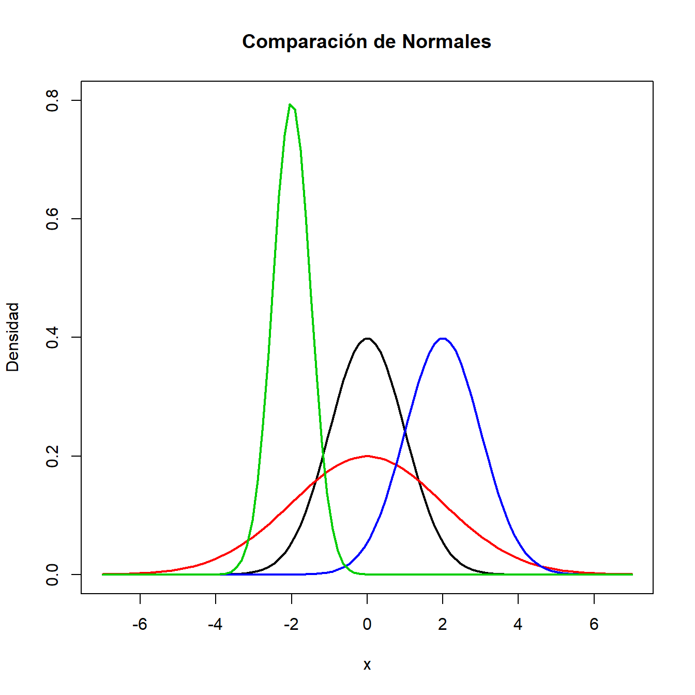
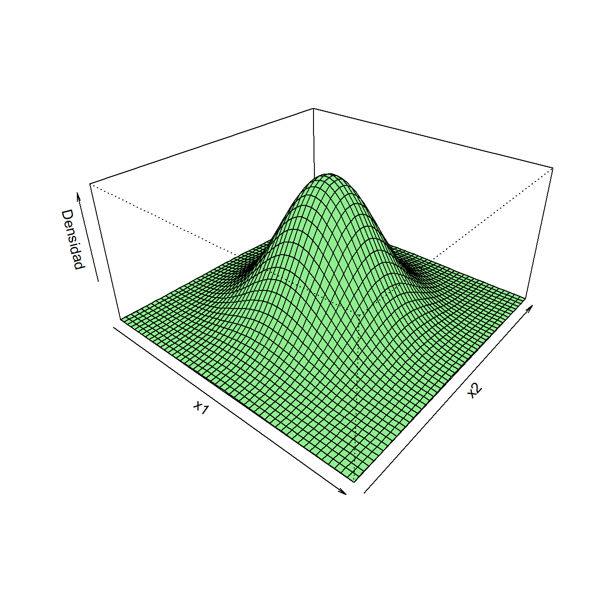
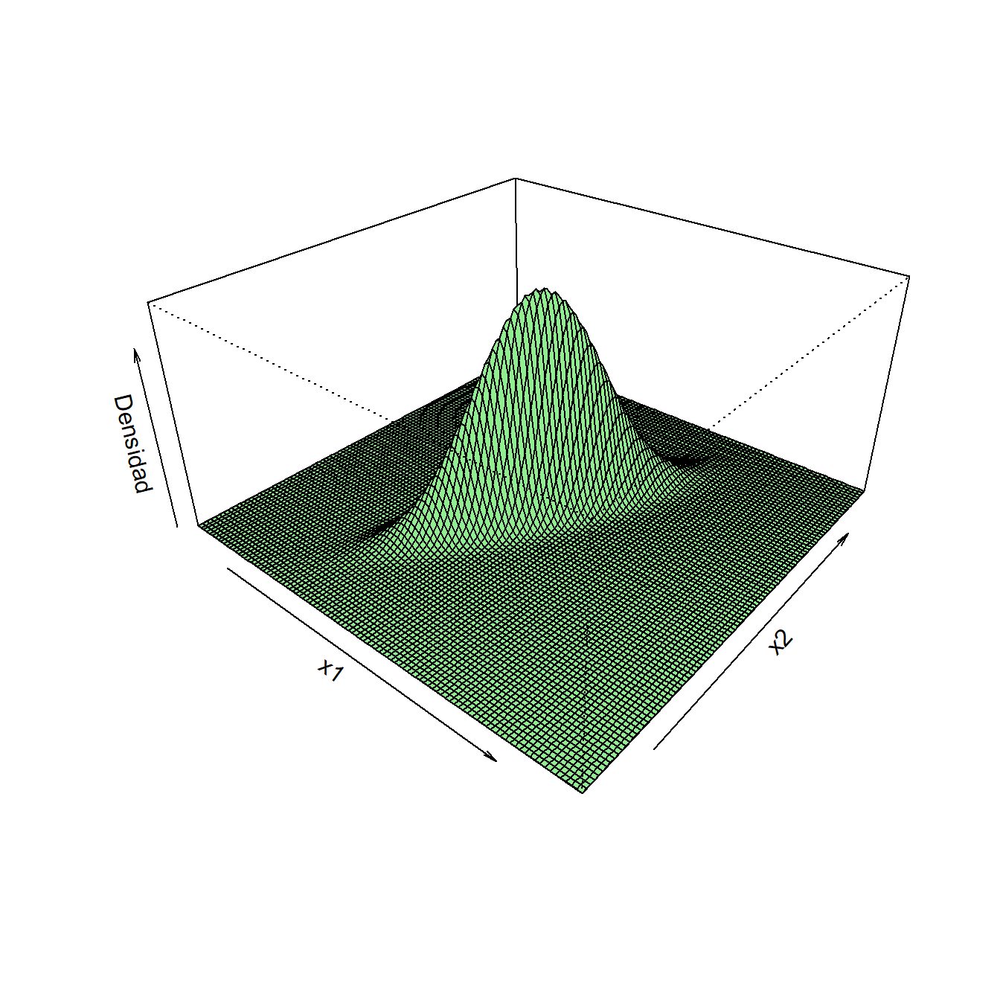
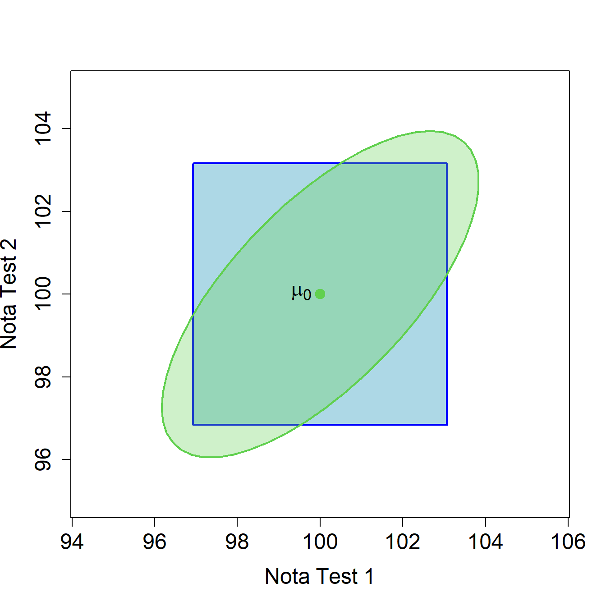
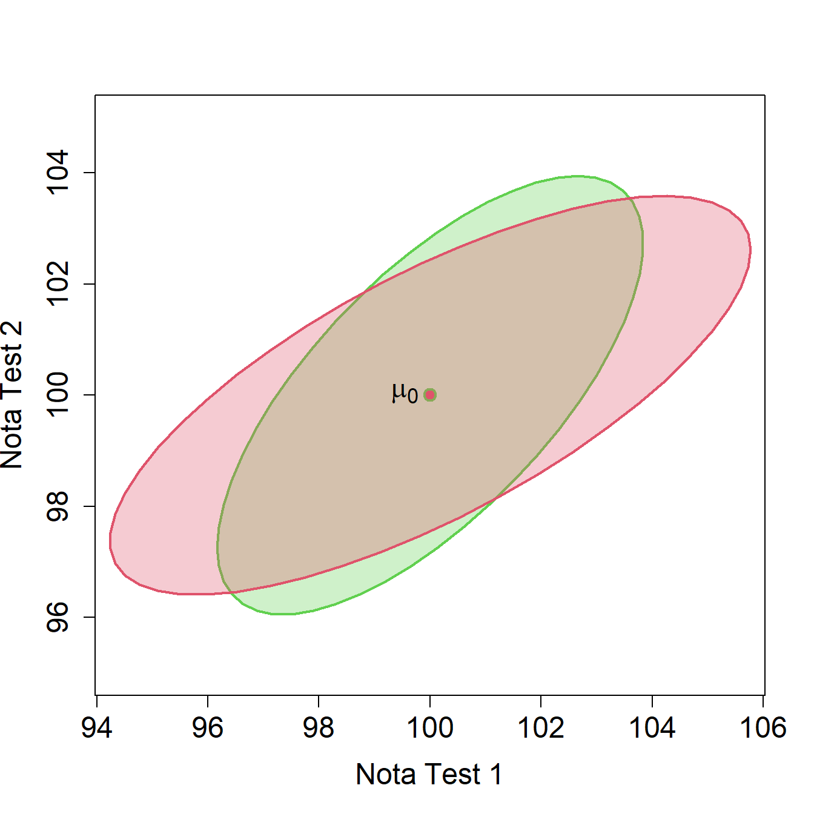
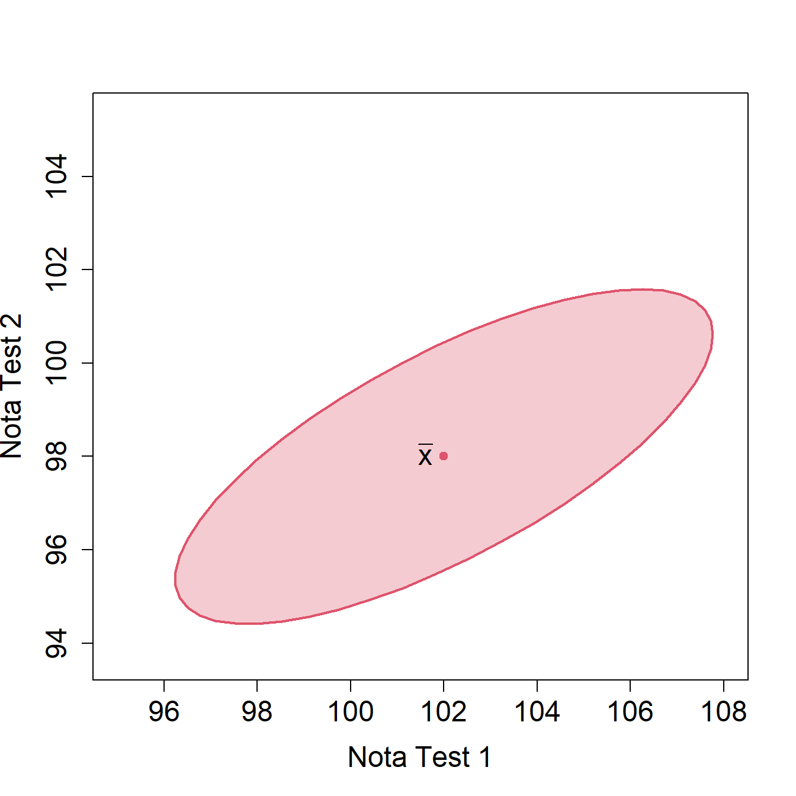
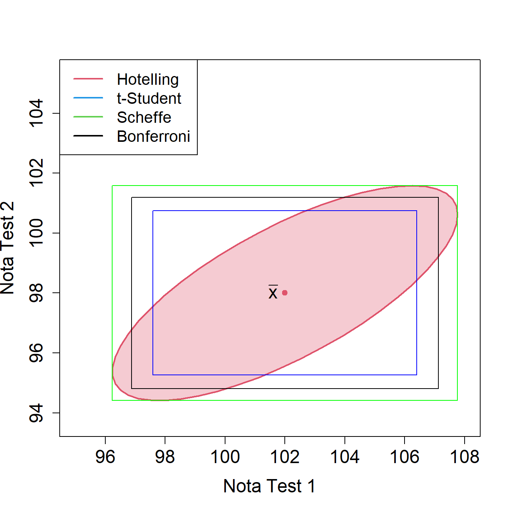

Capítulo2 Inferencia en poblaciones normales
Muchos de los métodos de contrastes de hipótesis y construcción de intervalos de confianza en el contexto unidimensional asumen que la distribución de los datos es normal univariante. De la misma manera, la mayor parte de los procedimientos multivariantes están basados en la distribución normal multivariante. Una de las principales ventajas de la distribución normal multivariante es que puede ser descrita totalmente utilizando únicamente su vector de medias y matriz de covarianzas. Además, las combinaciones lineales de normales siguen siendo normales e, incluso cuando los datos no provienen exactamente de una distribución normal, ésta puede servir como una buena aproximación (especialmente al hacer inferencia que involucre el vector de medias muestrales, que será aproximadamente normal multivariante por el Teorema Central del Límite).
Revisaremos en la primera parte de este capítulo la definición de distribución normal multivariante junto con algunas de sus propiedades. En el resto del tema veremos tareas de inferencia sobre el vector de medias y la matriz de covarianzas de una población normal multivariante, en base a una muestra aleatoria simple extraída de ella. También se tratarán problemas que involucren a varias poblaciones. Muchos procedimientos resultarán ser extensiones naturales de los métodos ya conocidos para poblaciones normales univariantes, mientras que en algún caso surgirán problemas nuevos, por ejemplo, comparación entre componentes del vector de medias o cuestiones de inferencia simultánea; en definitiva, situaciones provocadas por la dimensión múltiple.
Aunque el vector de medias muestral y la matriz de covarianzas muestral son estimadores naturales de sus análogos poblacionales, también vamos a ver que son los estimadores de máxima verosimilitud, y de paso, introducimos la función de verosimilitud y en general la idea de verosimilitud, que será empleada en varias ocasiones a lo largo de este tema.
Por otro lado, al estudiar los procedimientos naturales de inferencia sobre el vector de medias y la matriz de covarianzas, veremos que la suposición de normalidad en la distribución del vector de variables observadas es esencial en muchos de ellos. Por ejemplo, la forma elíptica de las regiones de confianza es consustancial a la forma de la distribución normal multivariante. Si la forma en que se presentaran las observaciones en el espacio no fuera elíptica, tampoco lo debería ser una región de confianza para el vector de medias. La última parte del tema está dedicada a métodos de contraste de normalidad en observaciones multivariantes. Existen varios procedimientos para evaluar si un conjunto de datos proviene de una población normal multivariante. Una primera posibilidad sería evaluar si cada una de las variables es normal univariante. Como hemos comentado, la normalidad multivariante implica la normalidad de distribuciones marginales unidimensionales. Por lo tanto, si alguna de las variables no es normal univariante, el vector no será normal multivariante. Tiene sentido entonces hacer un estudio inicial sobre las variables de forma individual. En la Sección 2.9 repasaremos en primer lugar los métodos de contraste de la normalidad en el caso univariante, prestando especial atención a los métodos susceptibles de ser extendidos al caso multivariante. De todos modos, los contrastes de normalidad univariante no serán en general suficientes, ya que la existencia de normalidad univariante de todas las variables no garantiza la normalidad multivariante de los datos. A continuación se abordan algunos métodos (los más representativos) para el contraste de normalidad multivariante. Están basados en la extensión de las medidas de asimetría, kurtosis, así como del test de Shapiro-Wilk al caso multivariante.
2.1 Estimación en la distribución normal multivariante
2.1.1 La distribución normal multivariante
Recordamos que si una variable aleatoria \(x\) unidimensional, con media \(\mu\) y varianza \(\sigma^2\) tiene distribución normal, entonces su función de densidad viene dada por
\[f(x)=\frac{1}{\sqrt{2\pi\sigma^2}}e^\frac{-({x}-\mu)^2}{2\sigma^2},\ \ \ -\infty<x<\infty.\]
Decimos en este caso que \(x\) tiene distribución \(N(\mu,\sigma^2)\). Puedes ver la representación de la función de densidad de distintas variables normales en la Figura 2.1.

Figura 2.1: Representación de la densidad de variables normales.
Si el vector aleatorio \(d\)-dimensional \(\bm{x}\) tiene distribución normal multivariante con vector de medias \(\bm{\mu}\) y matriz de covarianzas \(\bm\Sigma\), entonces su función de densidad viene dada por
\[f(\bm{x})=\frac{1}{(\sqrt{2\pi})^d\left|\bm\Sigma\right|^{1/2}}e^\frac{{-(\bm{x}-\bm{\mu})^\prime\bm{\Sigma}^{-1}(\bm{x}-\bm{\mu})}}{2}.\]
Decimos en este caso que \(\bm{x}\) tiene distribución \(N_d(\bm{\mu},\bm\Sigma)\). En la Figura 2.2 se representan las funciones de densidad de distintas variables normales bivariantes. En el Anexo A encontrarás propiedades importantes de esta distribución.


Figura 2.2: Densidad de vectores aleatorios con distribución normal bivariante. A la izquierda \(N(\bm{0},\bm{I_2})\). A la derecha \(N(\bm{0},\bm{\Sigma})\) con \(\sigma_1^2=1\), \(\sigma_2^2=3\) y \(\sigma_{12}=1.5\).
Fíjate que en la densidad multivariante, \(\left|\bm\Sigma\right|^{1/2}\) juega el papel de \(\sqrt{\sigma^2}\) en el caso unidimensional. Decimos que \(\left|\bm\Sigma\right|\) es la varianza poblacional generalizada. En efecto, el determinante \(\left|\bm\Sigma\right|\) nos sirve como una medida de variabilidad total. Dado un vector aleatorio \(\bm{x}\) con media \(\bm{\mu}\) y matriz de covarianzas \(\bm{\Sigma}\), un valor pequeño de \(\left|\bm\Sigma\right|\) indica que \(\bm{x}\) está concentrado cerca de \(\bm{\mu}\) o que existe multicolinealidad entre las variables. Si recordamos que el determinante de una matriz es el producto de sus autovalores, podemos concebir el determinante como una medida de si una matriz de covarianzas es grande o pequeña. Por ejemplo, si existe multicolinealidad, uno o más autovalores de \(\bm\Sigma\) será próximo a cero y en consecuencia, \(\left|\bm\Sigma\right|\) será pequeño.
Podemos representar una matriz de covarianzas \(2\times 2\) mediante una elipse cuyos ejes principales siguen la dirección de sus autovectores. Cada radio de la elipse es la raíz cuadrada de un autovalor de la matriz de covarianzas, ver Figura 2.3 (izquierda). Entonces, si denotamos por \(\lambda_1\) y \(\lambda_2\) a los autovalores de \(\bm\Sigma\),
\[\textnormal{Area del rectángulo circunscrito en la elipse}=4\cdot \sqrt{\lambda_1}\sqrt{\lambda_2}=4\sqrt{\left|\bm\Sigma\right|}.\]
En la última igualdad hemos usado que el determinante es el producto de
los autovalores. En la Figura 2.3 (derecha) se representan las elipses
correspondientes a distintas matrices de covarianzas. Para esta
representación hemos utilizado la función ellipse de la librería
car. En general, si la dimensión el espacio es \(d\), se tendrá que
\[\textnormal{Volumen del rectángulo circunscrito en el elipsoide}=2^d\sqrt{\left|\bm\Sigma\right|}.\]
Empleamos los términos volumen y elipsoide, pues son los que corresponden en el espacio de dimensión tres. En espacios de dimensión superior, que no son representables, se suele emplear igualmente esos términos. Por tanto, el determinante es una forma de medir el volumen o capacidad de un rectángulo (\(d=2\)), caja (\(d=3\)), ortoedro en general, que contenga al grueso del vector.
![Izquierda, representación de la elipse correspondiente a una matriz de covarianzas $2\times 2$. con autovectores $\bm{v_1}$, $\bm{v_2}$ y autovalores $\lambda_1$, $\lambda_2$. Cada radio de la elipse es la raíz cuadrada de un autovalor de la matriz de covarianzas. Derecha, representación de las elipses correspondientes a matrices de covarianzas $\bm{\Sigma_1}=\bm{I_2}$ (rojo), $\bm{\Sigma_2}=\mbox{diag}(3,1)$ (verde) y $\bm{\Sigma_3}=(\sigma_{ij})$ con $\sigma_{11}=3$, $\sigma_{22}=1$, $\sigma_{12}=1.4$ (azul).](bookdown_AM_files/figure-html/detsigma-1.png)
![Izquierda, representación de la elipse correspondiente a una matriz de covarianzas $2\times 2$. con autovectores $\bm{v_1}$, $\bm{v_2}$ y autovalores $\lambda_1$, $\lambda_2$. Cada radio de la elipse es la raíz cuadrada de un autovalor de la matriz de covarianzas. Derecha, representación de las elipses correspondientes a matrices de covarianzas $\bm{\Sigma_1}=\bm{I_2}$ (rojo), $\bm{\Sigma_2}=\mbox{diag}(3,1)$ (verde) y $\bm{\Sigma_3}=(\sigma_{ij})$ con $\sigma_{11}=3$, $\sigma_{22}=1$, $\sigma_{12}=1.4$ (azul).](bookdown_AM_files/figure-html/detsigma-2.png)
Figura 2.3: Izquierda, representación de la elipse correspondiente a una matriz de covarianzas \(2\times 2\). con autovectores \(\bm{v_1}\), \(\bm{v_2}\) y autovalores \(\lambda_1\), \(\lambda_2\). Cada radio de la elipse es la raíz cuadrada de un autovalor de la matriz de covarianzas. Derecha, representación de las elipses correspondientes a matrices de covarianzas \(\bm{\Sigma_1}=\bm{I_2}\) (rojo), \(\bm{\Sigma_2}=\mbox{diag}(3,1)\) (verde) y \(\bm{\Sigma_3}=(\sigma_{ij})\) con \(\sigma_{11}=3\), \(\sigma_{22}=1\), \(\sigma_{12}=1.4\) (azul).
2.1.2 Estimadores de máxima verosimilitud
Consideremos disponible una muestra aleatoria simple \(\bm{x_1},\ldots,\bm{x_n}\in N_d(\bm\mu,\bm\Sigma)\) de vectores aleatorios independientes y con la misma distribución normal multivariante. Vamos a obtener los estimadores de máxima verosimilitud para el vector de medias \(\bm\mu\) y para la matriz de covarianzas \(\bm\Sigma\). La función de verosimilitud sería:
\[L(\bm{x},\bm\mu,\bm\Sigma)=(2\pi)^{-nd/2} |\bm\Sigma |^{-n/2} \exp\left\{-\frac{1}{2}\sum_{i=1}^n \left(\bm{x_i}-\bm\mu\right)^\prime{}\bm\Sigma^{-1} \left(\bm{x_i}-\bm\mu\right)\right\}.\]
Observamos que
\[\begin{aligned} \sum_{i=1}^n \left(\bm{x_i}-\bm{\mu}\right)^\prime{}\bm\Sigma^{-1} \left(\bm{x_i}-\bm{\mu}\right) &= \sum_{i=1}^n\left[ \left(\bm{x_i}-\overline{\bm{x}}\right)^\prime{}\bm\Sigma^{-1} \left(\bm{x_i}-\overline{\bm{x}}\right)\right.\\ &\left.\qquad + \left(\overline{\bm{x}}-\bm{\mu}\right)^\prime{}\bm\Sigma^{-1} \left(\overline{\bm{x}}-\bm{\mu}\right)+ 2 \left(\overline{\bm{x}}-\bm{\mu}\right)^\prime{}\bm\Sigma^{-1} \left(\bm{x_i}-\overline{\bm{x}}\right) \right] \\ &= \sum_{i=1}^n \left(\bm{x_i}-\overline{\bm{x}}\right)^\prime{}\bm\Sigma^{-1} \left(\bm{x_i}-\overline{\bm{x}}\right)+ n \left(\overline{\bm{x}}-\bm{\mu}\right)^\prime{}\bm\Sigma^{-1} \left(\overline{\bm{x}}-\bm{\mu}\right) \end{aligned},\] ya que la suma de los dobles productos vale cero. Entonces la log–verosimilitud se puede expresar así:
\[\begin{aligned} \log L(\bm{x},\bm{\mu},\bm\Sigma) &= c - \frac{n}{2} \log |\bm\Sigma| - \frac{1}{2}\sum_{i=1}^n \left(\bm{x_i}-\bm{\mu}\right)^\prime{}\bm\Sigma^{-1} \left(\bm{x_i}-\bm{\mu}\right) \\ &= c - \frac{n}{2} \log |\bm\Sigma| -\frac{1}{2} \sum_{i=1}^n \left(\bm{x_i}-\overline{\bm{x}}\right)^\prime{}\bm\Sigma^{-1} \left(\bm{x_i}-\overline{\bm{x}}\right)\\ &\qquad -\frac{n}{2} \left(\overline{\bm{x}}-\bm{\mu}\right)^\prime{}\bm\Sigma^{-1} \left(\overline{\bm{x}}-\bm{\mu}\right)\end{aligned}\] siendo \(c=-\frac{nd}{2}\log(2\pi)\).
Observamos que, por ser \(\bm\Sigma\) definida positiva, (y en consecuencia, también lo será su inversa \(\bm\Sigma^{-1}\)), se tiene \((\overline{\bm{x}}-\bm{\mu})^\prime{}\bm\Sigma^{-1}(\overline{\bm{x}}-\bm{\mu})>0\), salvo que \(\bm{\mu}=\overline{\bm{x}}\), en cuyo caso vale cero. Por tanto, la función de log–verosimilitud alcanza su máximo en \(\hat{\bm{\mu}}=\overline{\bm{x}}\), que de este modo se convierte en el estimador de máxima verosimilitud del vector de medias. Además,
\[\begin{equation} \sup_{\bm\mu}\log L(\bm{x},\bm\mu,\bm\Sigma) = c - \frac{n}{2} \log |\bm\Sigma| -\frac{1}{2} \sum_{i=1}^n \left(\bm{x_i}-\overline{\bm{x}}\right)^\prime{}\bm\Sigma^{-1} \left(\bm{x_i}-\overline{\bm{x}}\right) \tag{2.1} \end{equation}\]
para cualquier matriz de covarianzas \(\bm\Sigma\).
A continuación calcularemos el máximo de aquella función respecto de \(\bm\Sigma\). Podemos expresar
\[\begin{aligned} \sup_{\bm{\mu}}\log L(\bm{x},\bm{\mu},\bm\Sigma) &= c - \frac{n}{2} \log |\bm\Sigma| -\frac{1}{2} \mbox{traza} \left[\sum_{i=1}^n \left(\bm{x_i}-\overline{\bm{x}}\right)^\prime{}\bm\Sigma^{-1} \left(\bm{x_i}-\overline{\bm{x}}\right)\right] \nonumber \\ &= c - \frac{n}{2} \log |\bm\Sigma| -\frac{1}{2} \sum_{i=1}^n \mbox{traza} \left[\left(\bm{x_i}-\overline{\bm{x}}\right)^\prime{} \bm\Sigma^{-1} \left(\bm{x_i}-\overline{\bm{x}}\right)\right] \nonumber \\ &= c - \frac{n}{2} \log |\bm\Sigma| -\frac{1}{2} \sum_{i=1}^n \mbox{traza} \left[ \bm\Sigma^{-1} \left(\bm{x_i}-\overline{\bm{x}}\right) \left(\bm{x_i}-\overline{\bm{x}}\right)^\prime{} \right] \nonumber \\ &= c - \frac{n}{2}\left( \log |\bm\Sigma| + \mbox{traza} \left( \bm\Sigma^{-1} \bm{S} \right)\right) \end{aligned}\] donde hemos aplicado que traza(\(\bm{A}\)+\(\bm{B}\))=traza(\(\bm{A}\))+traza(\(\bm{B}\)) y que traza(\(\bm{AB}\))=traza(\(\bm{BA}\)). Ahora debemos obtener el máximo de esta función respecto del argumento \(\bm\Sigma\). Para ello, apelamos al resultado siguiente, del cual omitimos su demostración.
Lema 2.1 Supongamos una matriz \(\bm{A}\) definida positiva. La función
\[f(\bm\Sigma)=\log|\bm\Sigma|+{\textnormal{traza}}\left(\bm\Sigma^{-1}\bm{A}\right),\] restringida a las matrices \(\bm\Sigma\) definidas positivas, alcanza su mínimo en \(\bm\Sigma=\bm{A}\).
Entonces, aplicando este lema llegamos a la conclusión de que los estimadores de máxima verosimilitud del vector de medias y la matriz de covarianzas (sin restricciones) son \(\overline{\bm{x}}\) y \(\bm{S}\), respectivamente. Asimismo, la función de verosimilitud tiene como máximo:
\[\begin{aligned} \sup_{\bm\Sigma}\sup_{\bm\mu}\log L(\bm{x},\bm{\mu},\bm\Sigma) &= c - \frac{n}{2} \left( \log |\bm{S}| + \mbox{traza} \left( \bm{S}^{-1} \bm{S} \right)\right)\\ &= c - \frac{n}{2} \left( \log |\bm{S}| + d\right). \end{aligned}\]
2.1.3 Distribución de \(\overline{\bm{x}}\) y \(\bm{S}\)
Sea entonces \(\bm{x_1},\ldots,\bm{x_n}\) una muestra aleatoria simple de \(N_d(\bm\mu,\bm\Sigma)\). En el apartado anterior hemos visto que los estimadores de máxima verosimilitud de \(\bm\mu\) y \(\bm\Sigma\) son \(\overline{\bm{x}}\) y \(\bm{S}\), respectivamente. Se verifica que:
\[\overline{\bm{x}}=\frac{1}{n}\sum_{i=1}^n \bm{x_i} \in N_d\left(\bm{\mu},\frac{1}{n}\bm\Sigma\right).\]
Se puede ver este resultado como una generalización del caso unidimensional. Recuerda que si \({x_1},\ldots,{x_n}\) es una muestra aleatoria simple de \(N(\mu,\sigma^2)\), entonces \(\overline{{x}}\in N\left({\mu},\sigma^2/n\right)\). Además en el caso unidimensional se demostraba también que \(ns^2/\sigma^2=\sum_{i=1}^n(x_i-\bar{x})^2/\sigma^2\in \chi_{n-1}^2\), es decir, tiene distribución ji-cuadrado con \(n-1\) grados de libertad2. Una forma de generalizar la suma de cuadrados anterior al caso multivariante sería considerar
\[n\bm{S}=\sum_{i=1}^n(\bm{x_i}-\overline{\bm{x}})(\bm{x_i}-\overline{\bm{x}})^\prime{}.\]
Fíjate que \(n\bm{S}\) es una matriz aleatoria \(d\times d\) y por tanto su distribución ya no podrá ser ji-cuadrado como en el caso unidimensional. Decimos que \(n\bm{S}\) sigue una distribución de Wishart3 con parámetros \(\bm\Sigma\) y \(n-1\) y denotamos:
\[n\bm{S}=\sum_{i=1}^n(\bm{x_i}-\bm{\bar{x}})(\bm{x_i}-\bm{\bar{x}})^\prime{}\in W_d(\bm\Sigma,n-1).\] En el Anexo A puedes encontrar un resumen de las principales propiedades de la distribución de Wishart.
2.2 Contrastes multivariantes versus contrastes univariantes
Antes de presentar resultados sobre contrastes multivariantes deberíamos discutir brevemente cual es la motivación para plantear contrastes multivariantes en lugar de (o junto con) contrastes univariantes. Consideremos como ejemplo un contraste acerca del vector de medias \(\bm\mu=(\mu_1,\ldots,\mu_d)^\prime{}\).
Ejemplo. Un estudio sobre Psicología educativa pretende analizar si las notas medias obtenidas por estudiantes universitarios en dos tests de inteligencia diferentes fueron iguales a 100. El primer test está orientado fundamentalmente a la valoración de habilidades aritméticas y el segundo a la valoración de habilidades de memoria.
Denotaremos por \(\bm{x}=(x_1,x_2)^\prime{}\) el vector aleatorio bidimensional correspondiente a las notas de los dos tests. Parece claro que las medidas de habilidad analizadas estarán interrelacionadas y, por lo tanto, es más natural contrastar si la media \(\bm\mu=(\mu_1,\mu_2)^\prime\) del vector \(\bm{x}\) es igual a \(\bm{\mu_0}=(100,100)^\prime{}\) que contrastar de forma individual si la nota media de cada uno de los tests \(\mu_i\) es igual a 100. Es decir, nos gustaría contrastar la hipótesis nula \(H_0:\bm{\mu}=\bm{\mu_0}\), siendo \(\bm{\mu_0}=(100,100)^\prime{}\).
Además de que los contrastes univariantes ignoran la correlación entre variables, lo cual en muchas ocasiones no es deseable (como se comenta en el ejemplo anterior), existen otros motivos por los que puede ser más conveniente plantear contrastes multivariantes. El uso de contrastes univariantes tiende a inflar el error de tipo I, que denotamos por \(\alpha\). Volvemos al ejemplo sobre los tests de inteligencia. Si para contrastar la hipótesis nula \(H_0:\bm{\mu}=\bm{\mu_0}\) planteamos dos contrastes individuales de nivel \(\alpha=0.05\), entonces está claro que rechazaremos \(H_0\) si rechazamos al menos uno de los dos contrastes individuales. Pero bajo \(H_0\) (suponiendo que las variables fuesen independientes),
\[\begin{aligned} P(\textnormal{al menos un rechazo individual})&=1-P(\textnormal{ningún rechazo individual})\\ &=1-(1-0.05)^2\\ &=0.0975.\end{aligned}\]
Es decir, al plantear el problema a través de contrastes individuales aumentamos la probabilidad del error de tipo I. Este inconveniente se hace más patente al aumentar la dimensión \(d\). Además los test multivariantes resultan en muchos casos más potentes (capaces de rechazar \(H_0\) cuando es falsa).
2.3 Contrastes sobre el vector de medias
A continuación veremos cómo se puede usar el test de razón de verosimilitudes para hacer inferencia en poblaciones normales multivariantes. En esta sección ilustraremos el caso del problema de inferencia sobre el vector de medias cuando la matriz de covarianzas es conocida, y también cuando es desconocida.
2.3.1 Contraste sobre el vector de medias con matriz de covarianzas conocida
En este apartado veremos como llevar a cabo un contraste sobre el vector de medias de una población normal asumiendo que la matriz de covarianzas \(\bm\Sigma\) es conocida. Antes, repasaremos la teoría en el caso unidimensional.
2.3.1.1 Revisión del caso unidimensional \(H_0:\mu=\mu_0\) con \(\sigma^2\) conocida
La hipótesis de interés es que la media \(\mu\) de una variable aleatoria \(x\) es igual a un valor dado \(\mu_0\) frente a la alternativa de que no es igual a \(\mu_0\), es decir \[H_0:\mu=\mu_0\textnormal{ frente a }H_1:\mu\neq\mu_0.\] Dada una muestra \(x_1,\ldots,x_n\) de normales \(N(\mu,\sigma^2)\) con \(\sigma^2\) conocida, se calcula la media muestral \(\overline{x}\) y se compara con \(\mu_0\) a través del estadístico
\[z=\frac{\overline{x}-\mu_0}{\sigma/\sqrt{n}}\]
que, bajo la hipótesis nula, se distribuye como una normal estándar. Por lo tanto, para un nivel de significación \(\alpha=0.05\) rechazamos la hipótesis nula si \(\left|z\right|\geq 1.96\). Equivalentemente
\[z^2=n(\overline{x}-\mu_0)\frac{1}{\sigma^2}(\overline{x}-\mu_0)\] y podríamos utilizar que \(z^2\) se distribuye, bajo la hipótesis nula, como una ji-cuadrado con un grado de libertad. Entonces rechazaríamos \(H_0\) si \(z^2\geq 3.84\).
2.3.1.2 Contraste multivariante \(H_0:\bm\mu=\bm{\mu_0}\) con \(\bm\Sigma\) conocida
Partimos ahora de una muestra aleatoria simple \(\bm{x_1},\ldots,\bm{x_n}\in N_d(\bm{\mu},\bm\Sigma)\) de vectores aleatorios independientes y con la misma distribución normal multivariante.
Suponiendo que la matriz de covarianzas \(\bm\Sigma\) es conocida, deseamos llevar a cabo tareas de inferencia relativas al vector de medias \(\bm{\mu}\). En concreto, podemos estar interesados en una región de confianza para \(\bm{\mu}\), o podemos querer contrastar una hipótesis nula del tipo \(H_0:\bm{\mu}=\bm{\mu_0}\).
Centrándonos en el contraste de la hipótesis nula \(H_0:\bm{\mu}=\bm{\mu_0}\), vamos a abordar este problema mediante el procedimiento de razón de verosimilitudes. En esta situación, el estadístico de contraste sería:
\[-2\log \lambda(\bm{x})=-2\log \frac{L(\bm{x},\bm{\mu_0},\bm\Sigma)}{\sup_{\bm{\mu}} L(\bm{x},\bm{\mu},\bm\Sigma)}\] donde la función de verosimilitud es la que se ha tratado en la sección anterior.
De lo allí expuesto extraemos que, bajo la hipótesis nula, \(H_0: \bm{\mu}=\bm{\mu_0}\), la función de log-verosimilitud adopta la forma:
\[\log L(\bm{x},\bm{\mu_0},\bm\Sigma) = c - \frac{n}{2} \log |\bm\Sigma | -\frac{1}{2} \sum_{i=1}^n \left(\bm{x_i}-\overline{\bm{x}}\right)^\prime{}\bm\Sigma^{-1} \left(\bm{x_i}-\overline{\bm{x}}\right) -\frac{n}{2} \left(\overline{\bm{x}}-\bm{\mu_0}\right)^\prime{}\bm\Sigma^{-1} \left(\overline{\bm{x}}-\bm{\mu_0}\right)\] mientras que bajo la alternativa, aplicando la expresión (2.1), se tiene
\[\sup_{\bm{\mu}}\log L(\bm{x},\bm{\mu},\bm\Sigma) = c - \frac{n}{2} \log |\bm\Sigma| -\frac{1}{2} \sum_{i=1}^n \left(\bm{x_i}-\overline{\bm{x}}\right)^\prime{}\bm\Sigma^{-1} \left(\bm{x_i}-\overline{\bm{x}}\right).\]
En definitiva, el estadístico de contraste resulta:
\[-2\log \lambda(\bm{x})=-2\log \frac{L(\bm{x},\bm{\mu_0},\bm\Sigma)}{\sup_{\bm{\mu}} L(\bm{x},\bm{\mu},\bm\Sigma)} =n\left(\overline{\bm{x}}-\bm{\mu_0}\right)^\prime{}\bm\Sigma^{-1} \left(\overline{\bm{x}}-\bm{\mu_0}\right).\]
Observamos que si \(H_0:\bm{\mu}=\bm{\mu_0}\) es cierta,
\[\overline{\bm{x}}\in N_d\left(\bm{\mu_0},\bm\Sigma/n\right)\] y, en consecuencia,
\[n\left(\overline{\bm{x}}-\bm{\mu_0}\right)^\prime{}\bm\Sigma^{-1} \left(\overline{\bm{x}}-\bm{\mu_0}\right)\in\chi_d^2.\]
Así, rechazaremos la hipótesis nula \(H_0:\bm{\mu}=\bm{\mu_0}\) cuando
\[\label{testchi} n\left(\overline{\bm{x}}-\bm{\mu_0}\right)^\prime{}\bm\Sigma^{-1} \left(\overline{\bm{x}}-\bm{\mu_0}\right)>\chi_{d,\alpha}^2\] siendo \(\chi_{d,\alpha}^2\) el cuantil \(1-\alpha\) de la distribución \(\chi_d^2\). La región de rechazo se corresponde con el exterior de un elipsoide en \(\mathbb{R}^d\).
Ejemplo. Volvemos al estudio sobre Psicología educativa. Se le han realizado los dos tests de inteligencia a 20 alumnos de un centro universitario. La nota media obtenida por los 20 alumnos en el test de valoración de habilidades aritméticas fue de \(102\) puntos. La nota media en el test de habilidades de memoria fue de \(98\) puntos. Asumamos además que las notas obtenidas provienen de una distribución normal bivariante \(N_2(\bm{\mu}, \bm\Sigma)\) siendo
\[\bm\Sigma=\left(\begin{array}{cc} 49 & 35 \\ 35 & 52 \end{array}\right).\] Queremos contrastar si las notas medias de estudiantes universitarios en los dos tests de inteligencia son iguales a 100. Es decir, queremos contrastar la hipótesis nula \(H_0:\bm{\mu}=\bm{\mu_0}\), siendo \(\bm{\mu_0}=(100,100)^\prime{}\).
A partir de la muestra obtenemos que \(\overline{\bm{x}}=(\overline{x_1},\overline{x_2})^\prime{}=(102,98)^\prime{}\). Calculamos el valor del estadístico para el contraste multivariante.
\[n\left(\overline{\bm{x}}-\bm{\mu_0}\right)^\prime{}\bm\Sigma^{-1} \left(\overline{\bm{x}}-\bm{\mu_0}\right)=20\left(2,-2\right)\left(\begin{array}{cc} 49 & 35 \\ 35 & 52 \end{array}\right)^{-1} \left(\begin{array}{r} 2 \\ -2 \end{array}\right)=10.34014.\]
> Sigma <- matrix(c(49, 35, 35, 52), nrow = 2)
> xbar <- c(102, 98)
> mu0 <- c(100, 100)
> estad <- 20 * (xbar - mu0) %*% solve(Sigma) %*% (xbar - mu0)
> estad
[,1]
[1,] 10.34014Rechazamos la hipótesis nula (para un nivel de significación \(\alpha=0.05\)) ya que el valor del estadístico es mayor que \(\chi_{d,\alpha}^2=5.991465\). También podemos calcular el \(p\)-valor del estadístico y razonar a partir de él (como el \(p\)-valor es menor que \(\alpha=0.05\) se rechaza \(H_0\) para dicho nivel de significación).
> alpha <- 0.05
> qchisq(1 - alpha, 2)
[1] 5.991465
> pvalue <- 1 - pchisq(estad, 2)
> pvalue
[,1]
[1,] 0.005684182Sin embargo, si planteamos los contrastes individuales \(H_0:\mu_1=100\) y \(H_0:\mu_2=100\) se tiene que
\[\frac{\overline{x_1}-\mu_0}{\sigma_1/\sqrt{n}}=\frac{102-100}{\sqrt{49/20}}=1.2777\] y
\[\frac{\overline{x_2}-\mu_0}{\sigma_2/\sqrt{n}}=\frac{98-100}{\sqrt{52/20}}= -1.24034.\] En ambos casos, el valor absoluto del estadístico es menor que 1.96 y por lo tanto no se rechazaría la hipótesis nula para ninguno de los dos contrastes individuales. En la Figura 2.4 se representan las zonas de rechazo y no rechazo para los contrastes univariantes y para el contraste bivariante correspondiente a los datos de este ejemplo (\(n=20\)). Si \(\overline{\bm{x}}\) pertenece a la zona verde, no se rechaza la hipótesis nula \(H_0:\bm\mu=\bm{\mu_0}\) siendo \(\bm{\mu_0}=(100,100)^\prime\). Si \(\overline{\bm{x}}\) pertenece a la zona azul, no se rechaza ni \(H_0:\mu_1=100\) ni \(H_0:\mu_2=100\). Fíjate que el punto \(\overline{\bm{x}}=(\overline{x_1},\overline{x_2})^\prime{}=(102,98)^\prime{}\) está fuera de la elipse que representa la zona de no rechazo del test multivariante y sin embargo, cae en la zona de no rechazo de los dos contrastes univariantes.

Figura 2.4: Zonas de rechazo y no rechazo para los contrastes univariantes y para el contraste bivariante correspondiente a los datos de tests de inteligencia (\(n=20\)). Si \(\overline{\bm{x}}\) pertenece a la zona verde, no se rechaza la hipótesis nula \(H_0:\bm\mu=\bm{\mu_0}\) siendo \(\bm{\mu_0}=(100,100)^\prime\). Si \(\overline{\bm{x}}\) pertenece a la zona azul, no se rechaza ni \(H_0:\mu_1=100\) ni \(H_0:\mu_2=100\).
2.3.2 Contraste sobre el vector de medias con matriz de covarianzas desconocida
Veremos ahora como llevar a cabo un contraste sobre el vector de medias de una población normal asumiendo que la matriz de covarianzas \(\bm\Sigma\) es desconocida. Repasaremos de nuevo en primer lugar la teoría en el caso unidimensional.
2.3.2.1 Revisión del caso unidimensional \(H_0:\mu=\mu_0\) con \(\sigma^2\) desconocida
La hipótesis de interés es que la media \(\mu\) de una variable aleatoria \(x\) es igual a un valor dado \(\mu_0\) frente a la alternativa de que no es igual a \(\mu_0\), es decir
\[H_0:\mu=\mu_0\textnormal{ frente a }H_1:\mu\neq\mu_0.\] Dada una muestra \(x_1,\ldots,x_n\) de normales \(N(\mu,\sigma^2)\) con \(\sigma^2\) desconocida, se calcula la media muestral \(\overline{x}\) y se compara con \(\mu_0\) a través del estadístico
\[t=\frac{\overline{x}-\mu_0}{s_c/\sqrt{n}}\] siendo \(s_c=\sum_{i=1}^n(x_i-\overline{x})^2/(n-1)\) la cuasivarianza muestral. Bajo la hipótesis nula, el estadístico se distribuye como una \(t\) de Student con \(n-1\) grados de libertad. Por lo tanto, para un nivel de significación \(\alpha\) rechazamos la hipótesis nula si \(\left|t\right|\geq t_{\alpha/2}\), siendo \(t_{\alpha/2}\) el cuantil \(1-\alpha/2\) de la distribución \(t\) de Student con \(n-1\) grados de libertad. Equivalentemente
\[\begin{equation} t^2=n(\overline{x}-\mu_0)\frac{1}{s_c^2}(\overline{x}-\mu_0). \tag{2.2} \end{equation}\]
Veremos que esta forma de escribir el estadístico estará relacionada con la versión multivariante del contraste.
2.3.2.2 Contraste multivariante \(H_0:\bm\mu=\bm{\mu_0}\) con \(\bm\Sigma\) desconocida
Disponemos ahora de una muestra aleatoria simple \(\bm{x_1},\ldots,\bm{x_n}\in N_d(\bm{\bm{\mu}},\bm\Sigma)\) y deseamos realizar tareas de inferencia relativas al vector de medias \(\bm{\mu}\). Suponemos que la matriz de covarianzas \(\bm\Sigma\) es desconocida.
El estadístico de razón de verosimilitudes para el contraste de la hipótesis nula \(H_0:\bm{\mu}=\bm{\mu_0}\) sería:
\[-2\log \lambda(\bm{x}) =-2\log \frac{\sup_{\bm\Sigma} L(\bm{x},\bm{\mu_0},\bm\Sigma)}{\sup_{\bm{\mu},\bm\Sigma} L(\bm{x},\bm{\mu},\bm\Sigma)}.\]
Nótese que ahora, al ser \(\bm\Sigma\) desconocida, se convierte en un parámetro tanto bajo la hipótesis nula como bajo la alternativa, parámetro que será estimado por máxima verosimilitud.
Bajo la alternativa, hemos visto en la sección anterior que los estimadores de máxima verosimilitud del vector de medias y la matriz de covarianzas (sin restricciones) son \(\overline{\bm{x}}\) y \(\bm{S}\), respectivamente. Asimismo, la función de verosimilitud tiene como máximo:
\[\sup_{\bm\Sigma}\sup_{\bm{\mu}}\log L(\bm{x},\bm{\mu},\bm\Sigma) = c - \frac{n}{2} \left( \log |\bm{S}| + \mbox{traza} \left( \bm{S}^{-1} \bm{S} \right)\right) = c - \frac{n}{2} \left( \log |\bm{S}| + d\right).\]
A continuación maximizamos la verosimilitud bajo la hipótesis nula. Para ello basta con expresar la verosimilitud en una forma similar a la anterior:
\[\begin{aligned} \log L(\bm{x},\bm{\mu_0},\bm\Sigma) &= c - \frac{n}{2} \log |\bm\Sigma| -\frac{1}{2} \mbox{traza} \left[\sum_{i=1}^n \left(\bm{x_i}-\bm{\mu_0}\right)^\prime{}\bm\Sigma^{-1} \left(\bm{x_i}-\bm{\mu_0}\right)\right] \\ &= c - \frac{n}{2} \log |\bm\Sigma| -\frac{1}{2} \sum_{i=1}^n \mbox{traza} \left[ \bm\Sigma^{-1} \left(\bm{x_i}-\bm{\mu_0}\right) \left(\bm{x_i}-\bm{\mu_0}\right)^\prime{} \right] \\ &= c - \frac{n}{2} \left( \log |\bm\Sigma| + \mbox{traza} \left( \bm\Sigma^{-1} \hat{\bm\Sigma}_{\bm{\mu_0}} \right)\right)\end{aligned}\]
siendo \(\hat{\bm\Sigma}_{\bm{\mu_0}}=\frac{1}{n}\sum_{i=1}^n \left(\bm{x_i}-\bm{\mu_0}\right) \left(\bm{x_i}-\bm{\mu_0}\right)^\prime{}\), el cual resulta ser un estimador razonable de la matriz de covarianzas bajo la hipótesis de que la media vale \(\bm{\mu_0}\). Por lo demás los pasos son idénticos al caso anterior, salvo que se ha puesto \(\bm{\mu_0}\) allí donde se hallaba \(\overline{\bm{x}}\). Aplicando de nuevo el lema, concluimos que \(\hat{\bm\Sigma}_{\bm{\mu_0}}\) es el estimador de máxima verosimilitud de la matriz de covarianzas bajo la hipótesis nula, y que la función de verosimilitud bajo dicha hipótesis alcanza el valor máximo:
\[\sup_{\bm\Sigma}\log L(\bm{x},\bm{\mu_0},\bm\Sigma) = c - \frac{n}{2} \left( \log |\hat{\bm\Sigma}_{\bm{\mu_0}}| + d \right).\]
Entonces el estadístico de contraste mediante la razón de verosimilitudes resulta:
\[-2\log \lambda(\bm{x}) =-2\log \frac{\sup_{\bm\Sigma} L(\bm{x},\bm{\mu_0},\bm\Sigma)}{\sup_{\bm{\mu},\bm\Sigma} L(\bm{x},\bm{\mu},\bm\Sigma)} =n\left( \log |\hat{\bm\Sigma}_{\bm{\mu_0}}| - \log |\bm{S}| \right).\]
Descomponemos
\[\begin{aligned} \hat{\bm\Sigma}_{\bm{\mu_0}} &= \frac{1}{n} \sum_{i=1}^n \left(\bm{x_i}-\bm{\mu_0}\right) \left(\bm{x_i}-\bm{\mu_0}\right)^\prime{} \\ &= \frac{1}{n} \sum_{i=1}^n \left[ \left(\bm{x_i}-\overline{\bm{x}}\right) \left(\bm{x_i}-\overline{\bm{x}}\right)^\prime{} + \left(\overline{\bm{x}}-\bm{\mu_0}\right) \left(\overline{\bm{x}}-\bm{\mu_0}\right)^\prime{} + 2 \left(\overline{\bm{x}}-\bm{\mu_0}\right) \left(\bm{x_i}-\overline{\bm{x}}\right)^\prime{} \right] \\ &= \bm{S}+\bm{r}\bm{r}^\prime{}\end{aligned}\] siendo \(\bm{r}=\overline{\bm{x}}-\bm{\mu_0}\). Sustituyendo en el estadístico de contraste obtenemos
\[\begin{aligned} -2\log \lambda(\bm{x}) &= n\left( \log |\bm{S}+\bm{r}\bm{r}^\prime{}| - \log |\bm{S}| \right) \\ &= n\left( \log \left(|\bm{S}|\cdot \left|\bm{I_d}+\bm{S}^{-1}\bm{r}\bm{r}^\prime{}\right|\right) - \log |\bm{S}| \right) \\ &=n \log \left|\bm{I_d}+\bm{S}^{-1}\bm{r}\bm{r}^\prime{}\right|.\end{aligned}\]
Estudiemos, pues, el determinante que aparece en el último término. En (a) denotamos mediante \(\lambda_1,\ldots,\lambda_d\) a los autovalores de \(\bm{S}^{-1}\bm{r}\bm{r}^\prime{}\), y observamos que \(1+\lambda_1,\ldots,1+\lambda_d\) son los autovalores de \(\bm{I_d}+\bm{S}^{-1}\bm{r}\bm{r}^\prime{}\). En (b) y (c) usamos que la matriz \(\bm{S}^{-1}\bm{r}\bm{r}^\prime{}\) es de rango uno.
\[ \begin{aligned} \left|\bm{I_d}+\bm{S}^{-1}\bm{r}\bm{r}^\prime{}\right|&\stackrel{(a)}{=} \prod_{j=1}^d \left(1+\lambda_j\right)\\ &\stackrel{(b)}{=} 1+\lambda_1\\ &\stackrel{(c)}{=} 1+{\textnormal{traza}}\left(\bm{S}^{-1}\bm{r}\bm{r}^\prime{}\right)\\ &=1+{\textnormal{traza}}\left(\bm{r}^\prime{}\bm{S}^{-1}\bm{r}\right)\\ &=1+\bm{r}^\prime{}\bm{S}^{-1}\bm{r}. \end{aligned}\]
Finalmente,
\[-2\log \lambda(\bm{x})=n\log\left(1+\bm{r}^\prime{}\bm{S}^{-1}\bm{r}\right)\]
será el estadístico de contraste y rechazaremos la hipótesis nula si este estadístico toma un valor demasiado grande.
Será equivalente si consideramos el estadístico
\[\bm{r}^\prime{}\bm{S}^{-1}\bm{r}=\left(\overline{\bm{x}}-\bm{\mu_0}\right)^\prime{} \bm{S}^{-1} \left(\overline{\bm{x}}-\bm{\mu_0}\right)\]
y rechazamos la hipótesis nula cuando este nuevo estadístico toma un valor demasiado grande. Nótese que el estadístico anterior se obtiene tras aplicar una transformación creciente a este último.
El estadístico recuerda al comentado en (2.2) para el caso univariante si tenemos en cuenta que:
\[T^2=(n-1)\left(\overline{\bm{x}}-\bm{\mu_0}\right)^\prime{} \bm{S}^{-1} \left(\overline{\bm{x}}-\bm{\mu_0}\right)=n\left(\overline{\bm{x}}-\bm{\mu_0}\right)^\prime{} \bm{S_c}^{-1} \left(\overline{\bm{x}}-\bm{\mu_0}\right)\]
donde \(\bm{S_c}=n/(n-1)\bm{S}\) denota la matriz de covarianzas corregida. La distribución de \(T^2\) bajo la hipótesis nula fue obtenida por Hotelling (1936). Se tiene que, si \(H_0\) es cierta, el estadístico \(T^2\) sigue una distribución \(\Gamma^2\) de Hotelling4 de parámetros \(d\) y \(n-1\). La distribución \(\Gamma^2\) de Hotelling juega un papel semejante a la distribución \(t\) de Student en el caso multivariante. Puedes encontrar propiedades y resultados sobre esta distribución en el Anexo A. Los valores críticos de la distribución \(\Gamma^2\) de Hotelling están tabulados. Aun así, se puede convertir una variable con distribución \(\Gamma^2\) de Hotelling en otra con distribución \(F\) de Snédecor. De este modo se evita la necesidad de considerar nuevas tablas de cuantiles. Simplemente se efectuaría la transformación y se apelaría a las tablas y operaciones conocidas para la \(F\) de Snédecor. En nuestro caso se tiene que, bajo \(H_0\),
\[\frac{n-d}{d} \left(\overline{\bm{x}}-\bm{\mu_0}\right)^\prime{} \bm{S}^{-1} \left(\overline{\bm{x}}-\bm{\mu_0}\right) \in F_{d,n-d}.\]
En definitiva, rechazaremos la hipótesis nula \(H_0: \bm{\mu}=\bm{\mu_0}\) si
\[\frac{n-d}{d} \left(\overline{\bm{x}}-\bm{\mu_0}\right)^\prime{} \bm{S}^{-1} \left(\overline{\bm{x}}-\bm{\mu_0}\right) > f_{d,n-d,\alpha}\] siendo \(f_{d,n-d,\alpha}\) el cuantil \(1-\alpha\) de la distribución \(F_{d,n-d}\).
Ejemplo. El fichero notas.txt contiene las puntuaciones obtenidas
por los 20 alumnos que han realizado los tests de inteligencia citados
en los ejemplos previos. Asumamos ahora que las notas obtenidas
provienen de una distribución normal bivariante
\(N_2(\bm{\mu}, \bm\Sigma)\) pero que \(\bm\Sigma\) es desconocida. Queremos
contrastar la hipótesis nula \(H_0:\bm{\mu}=\bm{\mu_0}\), siendo
\(\bm{\mu_0}=(100,100)^\prime{}\).
> tests <- read.table("data/notas.txt", header = TRUE)
> n <- dim(tests)[1]
> d <- dim(tests)[2]
> xbar <- colMeans(tests)
> xbar
Test1 Test2
102 98
> S <- (n - 1)/n * cov(tests)
> S
Test1 Test2
Test1 84.1 38.3
Test2 38.3 32.6
> mu0 <- c(100, 100)
> estad <- (n - d)/d * (xbar - mu0) %*% solve(S) %*% (xbar - mu0)
> estad
[,1]
[1,] 5.458867Rechazamos la hipótesis nula (para un nivel de significación \(\alpha=0.05\)) ya que el valor del estadístico es mayor que \(f_{d,n-d,\alpha}=3.554557\). También podemos calcular el \(p\)-valor del estadístico y razonar a partir de él (como el \(p\)-valor es menor que \(\alpha=0.05\) se rechaza \(H_0\) para dicho nivel de significación).
> alpha <- 0.05
> qf(1 - alpha, d, n - d)
[1] 3.554557
> pvalue <- 1 - pf(estad, d, n - d)
> pvalue
[,1]
[1,] 0.0140273En la Figura 2.5 se representa en rojo la zona de no rechazo del contraste bivariante correspondiente a los datos de este ejemplo (\(n=20\)) en comparación con la zona de no rechazo cuando se suponía que la matriz de covarianzas era conocida (elipse en verde).

Figura 2.5: Zonas de rechazo y no rechazo para el contraste bivariante correspondiente a los datos de tests de inteligencia (\(n=20\)). Para el caso en que se conoce la matriz de covarianzas, rechazamos la hipótesis nula si \(\overline{\bm{x}}\) no pertenece a la elipse en verde. Para el caso en que se desconoce la matriz de covarianzas, rechazamos la hipótesis nula si \(\overline{\bm{x}}\) no pertenece a la elipse en rojo.
2.4 Regiones de confianza y comparaciones simultáneas
2.4.1 Regiones de confianza
A partir del estadístico \(\Gamma^2\) de Hotelling, podemos obtener una región de confianza para el vector de medias, de la forma:
\[\left\{\bm{\mu}\in{\Bbb R}^d: \frac{n-d}{d}\left(\overline{\bm{x}}-\bm{\mu}\right)^\prime{}\bm{S}^{-1}\left(\overline{\bm{x}}-\bm{\mu}\right)<f_{d,n-d,\alpha}\right\}.\]
Esta región constituye un elipsoide en \({\Bbb R}^d\), centrado en \(\overline{\bm{x}}\), cuyos ejes van en la dirección de los autovectores de \(\bm{S}\) y la longitud de los radios (semilongitud de los ejes) viene dada por
\[\sqrt{\lambda_j}\sqrt{\frac{d}{n-d}f_{d,n-d,\alpha}}\qquad j\in\{1,\ldots,d\}\]
siendo \(\lambda_1,\ldots,\lambda_d\) los autovalores de \(\bm{S}\). En la Figura 2.6 se muestra la región de confianza (\(\alpha=0.05\)) para el vector de notas medias en el ejemplo de tests de inteligencia. El elipsoide se calcula en base al estadístico \(\Gamma^2\) de Hotelling.

Figura 2.6: Región de confianza (\(\alpha=0.05\)) para el vector de notas medias en el ejemplo de tests de inteligencia.
2.4.2 Intervalos de confianza individuales
A continuación planteamos el problema de conseguir intervalos de confianza para las componentes del vector de medias, o más en general, para combinaciones lineales del tipo
\[\bm{a}^\prime{}\bm{\mu}=a_1\mu_1+\cdots+a_d\mu_d.\]
Observando que \(\bm{a}^\prime{}\bm{x_1},\ldots,\bm{a}^\prime{}\bm{x_n}\in N(\bm{a}^\prime{}\bm{\mu},\bm{a}^\prime{}\bm\Sigma\bm{a})\) y además son independientes, podemos abordar este problema, que ya es univariante, mediante el procedimiento de la \(t\) de Student. Así, como la media y la cuasivarianza muestrales calculadas sobre las observaciones \(\bm{a}^\prime{}\bm{x_1},\ldots,\bm{a}^\prime{}\bm{x_n}\) resultan ser \(\bm{a}^\prime{}\overline{\bm{x}}\) y \(\bm{a}^\prime{}\bm{S_c}\bm{a}\), respectivamente, el intervalo de confianza adopta la forma
\[\left(\bm{a}^\prime{}\overline{\bm{x}}-t_{n-1,\alpha/2}\frac{\sqrt{\bm{a}^\prime{}\bm{S_c}\bm{a}}}{\sqrt{n}}, \bm{a}^\prime{}\overline{\bm{x}}+t_{n-1,\alpha/2}\frac{\sqrt{\bm{a}^\prime{}\bm{S_c}\bm{a}}}{\sqrt{n}}\right)\] siendo \(t_{n-1,\alpha/2}\) el cuantil \(1-\alpha/2\) de la distribución \(t\) de Student con \(n-1\) grados de libertad. De este modo, para un \(\bm{a}\) fijo, el intervalo anterior contiene a \(\bm{a}^\prime{}\bm{\mu}\) con una probabilidad \(1-\alpha\). En particular, podemos pensar en un vector de la forma \(\bm{a}=(1,0,\ldots,0)^\prime{}\) que serviría para extraer la primera componente del vector aleatorio. Igual se haría con las demás componentes mediante los vectores canónicos correspondientes. Así obtendríamos \(p\) intervalos de confianza, uno para cada componente del vector de medias. Sin embargo, el nivel de confianza se refiere a la probabilidad individual de cada intervalo, de modo que la probabilidad de que todos los intervalos simultáneamente contengan a la componente correspondiente del vector de medias será en general inferior al nivel de confianza fijado.
2.4.3 Intervalos de confianza simultáneos por el método de Scheffé
Para satisfacer un nivel de confianza simultáneo, debemos modificar la construcción de los intervalos haciéndolos más amplios. Vamos a plantear este objetivo de manera simultánea en todos los vectores \(\bm{a}\). Si seguimos partiendo como pivote de la media estudentizada, la idea podría ser cambiar el valor \(t_{n-1,\alpha/2}\) por otra constante adecuada, previsiblemente más grande. Así, si
\[P\left\{ \left|\frac{\sqrt{n}\left(\bm{a}^\prime{}\overline{\bm{x}}-\bm{a}^\prime{}\bm{\mu}\right)}{\sqrt{\bm{a}^\prime{}\bm{S_c}\bm{a}}}\right| < c \qquad \forall \bm{a}\in{\Bbb R}^p\right\}=1-\alpha\] los intervalos de confianza obtenidos al sustituir \(t_{n-1,\alpha/2}\) por \(c\) cumplirán el nivel de confianza de manera simultánea. Enunciamos el lema siguiente.
Lema 2.2 Sea \(\bm{B}\) una matriz \(d\times d\), simétrica y definida positiva, y \(\bm{r}\in {\Bbb R}^d\). Entonces
\[\max_{\bm{x}\in{\Bbb{R}}^d\backslash\{\bm{0}\}}\frac{\left(\bm{x}^\prime{}\bm{r}\right)^2}{\bm{x}^\prime{}\bm{B}\bm{x}}=\bm{r}^\prime{}\bm{B}^{-1}\bm{r}\] y este máximo se alcanza cuando \(\bm{x}=c\bm{B}^{-1}\bm{r}\) para cualquier \(c\in {\Bbb R}\backslash \{0\}\).
Aplicando este lema obtenemos
\[\max_{\bm{a}\in{\Bbb R}^d}\frac{n\left(\bm{a}^\prime{}\left(\overline{\bm{x}}-\bm{\mu}\right)\right)^2}{\bm{a}^\prime{}\bm{S_c}\bm{a}} =n\left(\overline{\bm{x}}-\bm{\mu}\right)^\prime{}\bm {S_c}^{-1}\left(\overline{\bm{x}}-\bm{\mu}\right)\in \Gamma^2(d,n-1).\] De este resultado se puede extraer el valor de \(c\) y finalmente se obtienen los que se conocen como intervalos de confianza simultáneos por el método de Scheffé:
\[\left(\ \bm{a}^\prime{}\overline{\bm{x}} - \sqrt{\frac{d(n-1)}{n-d}f_{d,n-d,\alpha}}\frac{\sqrt{\bm{a}^\prime{}\bm{S_c}\bm{a}}}{\sqrt{n}}\ , \bm{a}^\prime{}\overline{\bm{x}} + \sqrt{\frac{d(n-1)}{n-d}f_{d,n-d,\alpha}}\frac{\sqrt{\bm{a}^\prime{}\bm {S_c}\bm{a}}}{\sqrt{n}}\ \right)\]
o equivalentemente
\[\left(\ \bm{a}^\prime{}\overline{\bm{x}} - \sqrt{\frac{d}{n-d}f_{d,n-d,\alpha}\bm{a}^\prime{}\bm{S}\bm{a}}\ , \bm{a}^\prime{}\overline{\bm{x}} + \sqrt{\frac{d}{n-d}f_{d,n-d,\alpha}\bm{a}^\prime{}\bm{S}\bm{a}}\ \right)\]
Observación. Se puede demostrar que los intervalos de confianza simultáneos por el método de Scheffé coinciden con la proyección de la elipse de confianza sobre cada una de las direcciones determinadas por los vectores \(\bm{a}\). En concreto, si en \(\bm{a}\) se consideran las direcciones de los ejes, se obtendrían intervalos de confianza para cada componente.
La tabla siguiente permite comparar los valores de \(c\) para el cálculo de los intervalos de confianza, extraídos de la \(t\) de Student frente a los que se obtienen mediante el método de Scheffé.
| \(\sqrt{\frac{d(n-1)}{n-d}f_{d,n-d,0.05}}\) | |||
| \(n\) | \(t_{n-1,0.025}\) | \(d=4\) | \(d=10\) |
| 15 | 2.145 | 4.14 | 11.52 |
| 25 | 2.064 | 3.60 | 6.39 |
| 50 | 2.010 | 3.31 | 5.05 |
| 100 | 1.970 | 3.19 | 4.61 |
| \(\infty\) | 1.960 | 3.08 | 4.28 |
2.4.4 Intervalos de confianza simultáneos por el método de Bonferroni
Otro método para obtener intervalos de confianza simultáneos es el método de Bonferroni. Es una alternativa válida en cualquier contexto en el que se requiera una cantidad finita de intervalos simultáneos, ya que no se basa en la naturaleza probabilística del problema en cuestión (como sí lo hace el método de Scheffé), sino que su fundamento radica simplemente en la subaditividad de la probabilidad.
Si \(C_1,\ldots,C_m\) consisten en los sucesos respectivos de que cada intervalo de confianza contenga al parámetro correspondiente,
\[\begin{aligned} P(C_i\ \mbox{cierto}\ \forall i) &= 1-P(C_i\ \mbox{falso para algún}\ i) \\ &\geq 1-\sum_{i=1}^m P(C_i\ \mbox{falso})=1-\left(\alpha_1+\cdots +\alpha_m\right)\end{aligned}\]
siendo \(1-\alpha_1,\ldots,1-\alpha_m\) los niveles de confianza individuales de cada intervalo. Así, para alcanzar un nivel de confianza simultáneo \(1-\alpha\) basta con tomar \(\alpha_1,\ldots,\alpha_m\) de modo que \(\alpha_1+\cdots+\alpha_m=\alpha\), por ejemplo mediante \(\alpha_1=\cdots=\alpha_m=\alpha/m\).
La tabla siguiente muestra el cociente de longitudes (para \(1-\alpha=0.95\)), cuando se construyen intervalos para cada componente:
\[\frac{\mbox{Longitud del intervalo de Bonferroni}} {\mbox{Longitud del intervalo de Scheffé}} =\frac{t_{n-1,\alpha/(2m)}}{\sqrt{\frac{d(n-1)}{n-d}f_{d,n-d,\alpha}}}.\]
| \(m=d\) | |||
| \(n\) | 2 | 4 | 10 |
| 15 | 0.88 | 0.69 | 0.29 |
| 25 | 0.90 | 0.75 | 0.48 |
| 50 | 0.91 | 0.78 | 0.58 |
| 100 | 0.91 | 0.80 | 0.62 |
| \(\infty\) | 0.91 | 0.81 | 0.66 |
Ejemplo. Sobre el ejemplo de las puntuaciones de tests de inteligencia, vamos a calcular los intervalos de confianza para la calificación media del test 1 y del test 2, al nivel de confianza del 95%, obtenidos de manera individual, y simultáneos por el método de Scheffé y por el método de Bonferroni. Así, en la Figura 2.7 se representan mediante una elipse en color rojo la región de confianza para el vector de medias \(\bm{\mu}=(\bm{\mu_1}, \bm{\mu_2})^\prime{}\). En el centro de la elipse se sitúa el vector con las medias muestrales \(\overline{\bm{x}}=(102, 98)^\prime{}\).
Al proyectar la elipse sobre los ejes horizontal y vertical se obtienen los intervalos representados en color verde, que serían intervalos de confianza simultáneos por el método de Scheffé. Los intervalos de confianza simultáneos por el método de Bonferroni vienen representados en color negro. Como cabía esperar, son más pequeños que los intervalos simultáneos por el método de Scheffé. Por último, los intervalos de confianza individuales han sido representados con trazo azul. Son los más pequeños, también conforme a lo previsible.

Figura 2.7: Región de confianza para el vector de medias (elipse), junto con intervalos de confianza individuales (trazo azul), simultáneos por el método de Bonferroni (trazo negro) y simultáneos por el método de Scheffé (trazo verde).
2.5 Generalización del contraste sobre el vector de medias
En esta sección veremos cómo se puede generalizar el contraste sobre el vector de medias, al caso de restricciones más genéricas sobre \(\bm{\mu}\), más generales que la hipótesis nula, \(H_0:\bm{\mu}=\bm{\mu_0}\). El resultado básico lo enunciamos como un teorema. Después, como aplicación más común de este resultado, veremos el contraste de restricciones lineales sobre \(\bm{\mu}\), entre las cuales tiene un interés especial el contraste de igualdad de las componentes del vector de medias.
2.5.1 Resultado general
Teorema 2.1 Sea \(\bm{x_1},\ldots,\bm{x_n}\) una muestra aleatoria simple de \(N_d(\bm{\mu},\bm\Sigma)\). Si las hipótesis \(H_0\) y \(H_a\) conducen a los estimadores de máxima verosimilitud \(\hat{\bm{\mu}}\) y \(\overline{\bm{x}}\), respectivamente, y bajo ninguna de las dos hipótesis hay restricciones para \(\bm\Sigma\), entonces los estimadores de máxima verosimilitud de \(\bm\Sigma\) son \(\bm{S}+\bm{r}\bm{r}^\prime{}\) y \(\bm{S}\), bajo \(H_0\) y \(H_a\) respectivamente, siendo \(\bm{r}=\overline{\bm{x}}-\hat{\bm{\mu}}\).
Además, el test de razón de verosimilitudes para contrastar \(H_0\) frente a \(H_a\) viene dado por
\[\begin{equation} -2\log\lambda(\bm{x})=n\bm{r}^\prime{}\bm\Sigma^{-1}\bm{r} \qquad \mbox{si}\ \bm\Sigma\ \mbox{es conocida} \tag{2.3} \end{equation}\]
y
\[\begin{equation} -2\log\lambda(\bm{x})=n\log\left(1+\bm{r}^\prime{}\bm{S}^{-1}\bm{r}\right) \qquad \mbox{si}\ \bm\Sigma\ \mbox{es desconocida.} \tag{2.4} \end{equation}\]
Dem. La demostración seguiría los mismos pasos que en los casos anteriores, donde contrastábamos una hipótesis nula simple sobre el vector de medias con matriz de covarianzas conocida o desconocida.
2.5.2 Contraste de restricciones lineales
Supongamos que \(\bm\Sigma\) es conocida y deseamos contrastar la hipótesis nula
\[H_0: \bm{A}\bm{\mu}=\bm{b}\] siendo \(\bm{A}\) una matriz conocida de orden \(q\times d\) y rango máximo \(q\), y \(\bm{b}\) un vector conocido.
A este problema de contraste le podemos aplicar el teorema anterior. Para ello, tenemos que obtener el estimador de máxima verosimilitud bajo \(H_0\), que denotaremos mediante \(\hat{\bm{\mu}}\). La función de log–verosimilitud se puede escribir así:
\[\begin{aligned} l(\bm{x},\bm{\mu},\bm\Sigma)&=\log L(\bm{x},\bm{\mu},\bm\Sigma)\\ &= c-\frac{n}{2} \log |\bm\Sigma| -\frac{1}{2} \sum_{i=1}^n \left(\bm{x_i}-\overline{\bm{x}}\right)^\prime{}\bm\Sigma^{-1}\left(\bm{x_i}-\overline{\bm{x}}\right)\\ &\qquad -\frac{n}{2} \left(\overline{\bm{x}}-\bm{\mu}\right)^\prime{}\bm\Sigma^{-1}\left(\overline{\bm{x}}-\bm{\mu}\right). \end{aligned}\]
En tal caso, el problema consiste en:
\[ \begin{aligned} \textnormal{Maximizar }&\ \ l(\bm{x}, \bm{\mu},\bm\Sigma)\\ \textnormal{sujeto a }&\ \ \bm{A}\bm{\mu}=\bm{b} \end{aligned} \]
Consideramos la función
\[\bm{a}^+=\bm{a}-n\bm{\lambda}^\prime{}(\bm{A}\bm{\mu}-\bm{b})\] siendo \(\bm{\lambda}\) un vector de multiplicadores de Lagrange. Derivando
\[\frac{\partial \bm{a}^+}{\partial \bm{\mu}}=n\left(\overline{\bm{x}}-\bm{\mu}\right)^\prime{}\bm\Sigma^{-1}-n\bm{\lambda}^\prime{}\bm{A}=0.\] De donde
\[\begin{equation} \overline{\bm{x}}-\bm{\mu}=\bm\Sigma \bm{A}^\prime{} \bm{\lambda} \tag{2.5} \end{equation}\]
ecuación que debemos añadir a la restricción \(\bm{A}\bm{\mu}=\bm{b}\), para obtener las soluciones para \(\bm{\lambda}\) y \(\bm{\mu}\). Multiplicando por \(\bm{A}\), \[\bm{A}\overline{\bm{x}}-\bm{A}\bm{\mu}=\bm{A}\overline{\bm{x}}-\bm{b}=\left(\bm{A}\bm\Sigma \bm{A}^\prime{}\right)\bm{\lambda}\] lo cual nos permite despejar \(\bm{\lambda}=\left(\bm{A}\bm\Sigma \bm{A}^\prime{}\right)^{-1}\left(\bm{A}\overline{\bm{x}}-\bm{b}\right)\) que, sustituido en la ecuación (2.5), da lugar al estimador de máxima verosimilitud
\[\hat{\bm{\mu}}=\overline{\bm{x}}-\bm\Sigma \bm{A}^\prime{} \left(\bm{A}\bm\Sigma \bm{A}^\prime{}\right)^{-1}\left(\bm{A}\overline{\bm{x}}-\bm{b}\right).\]
El test de razón de verosimilitudes viene dado por (2.3), donde
\[\bm{r}=\overline{\bm{x}}-\hat{\bm{\mu}}=\bm\Sigma \bm{A}^\prime{} \left(\bm{A}\bm\Sigma \bm{A}^\prime{}\right)^{-1}\left(\bm{A}\overline{\bm{x}}-\bm{b}\right)\] de modo que finalmente adopta la forma
\[-2\log \lambda(\bm{x})=n\left(\bm{A}\overline{\bm{x}}-\bm{b}\right)^\prime{} \left(\bm{A}\bm\Sigma \bm{A}^\prime{}\right)^{-1}\left(\bm{A}\overline{\bm{x}}-\bm{b}\right).\]
Bajo la hipótesis nula, \(H_0\), \(\bm{A}\bm{x_1},\ldots,\bm{A}\bm{x_n}\in N_q(\bm{b},\bm{A}\bm\Sigma \bm{A}^\prime{})\) y son independientes, siendo \(q\) la dimensión de \(\bm{b}\), y por tanto la distribución del estadístico de contraste es \(\chi_q^2\). En resumen, rechazaremos la hipótesis nula \(H_0: \bm{A}\bm{\mu}=\bm{b}\) si
\[n\left(\bm{A}\overline{\bm{x}}-\bm{b}\right)^\prime{} \left(\bm{A}\bm\Sigma \bm{A}^\prime{}\right)^{-1}\left(\bm{A}\overline{\bm{x}}-\bm{b}\right)>\chi_{q,\alpha}^2\] siendo \(\chi_{q,\alpha}^2\) el cuantil \(1-\alpha\) de la distribución \(\chi_q^2\).
Si la matriz de covarianzas es desconocida, los desarrollos que conducen al estimador de máxima verosimilitud de \(\bm{\mu}\) bajo \(H_0\) son algo más complejos. Por ello, omitimos los detalles. El resultado es el siguiente:
\[\hat{\bm{\mu}}=\overline{\bm{x}}- \bm{S} \bm{A}^\prime{} \left(\bm{A}\bm{S}\bm{A}^\prime{}\right)^{-1}\left(\bm{A}\overline{\bm{x}}-\bm{b}\right).\]
El test de razón de verosimilitudes viene dado por (2.4), donde
\[\bm{r}=\overline{\bm{x}}-\hat{\bm{\mu}}=\bm{S}\bm{A}^\prime{} \left(\bm{A}\bm{S}\bm{A}^\prime{}\right)^{-1}\left(\bm{A}\overline{\bm{x}}-\bm{b}\right)\] de modo que finalmente tomamos como estadístico de contraste
\[(n-1)\bm{r}^\prime{}\bm{S}^{-1}\bm{r}=(n-1) \left(\bm{A}\overline{\bm{x}}-\bm{b}\right)^\prime{} \left(\bm{A}\bm{S} \bm{A}^\prime{}\right)^{-1}\left(\bm{A}\overline{\bm{x}}-\bm{b}\right)\] cuya distribución es \(\Gamma^2(q,n-1)\). Empleando que la distribución \(\Gamma^2\) de Hotelling se puede expresar como una \(F\) de Snédecor, salvo constantes, se llega a
\[\frac{n-q}{q}\left(\bm{A}\overline{\bm{x}}-\bm{b}\right)^\prime{} \left(\bm{A}\bm{S}\bm{A}^\prime{}\right)^{-1}\left(\bm{A}\overline{\bm{x}}-\bm{b}\right)\in F_{q,n-q}.\]
Por lo tanto, si \(\bm\Sigma\) es desconocida, rechazaremos la hipótesis nula \(H_0: \bm{A}\bm{\mu}=\bm{b}\) si \[\frac{n-q}{q}\left(\bm{A}\overline{\bm{x}}-\bm{b}\right)^\prime{} \left(\bm{A}\bm{S}\bm{A}^\prime{}\right)^{-1}\left(\bm{A}\overline{\bm{x}}-\bm{b}\right)> f_{q,n-q, \alpha}\] siendo \(f_{q,n-q,\alpha}\) el cuantil \(1-\alpha\) de la distribución \(F_{q,n-q}\).
2.5.2.1 Caso particular. Contraste de igualdad de las componentes del vector de medias
El contraste de la hipótesis nula de que las \(d\) componentes del vector de medias, \(\bm{\mu}=(\mu_1,\ldots,\mu_d)^\prime{}\), son iguales, se puede ver como un caso particular del contraste de restricciones lineales. Para ello, basta considerar la siguiente matriz
\[\bm{A}=\left(\begin{array}{ccccc} 1 & -1 & 0 & \cdots & 0 \\ 1 & 0 & -1 & \ddots & \vdots \\ \vdots & \vdots & \ddots & \ddots & 0 \\ 1 & 0 & \cdots & 0 & -1 \end{array}\right)\] de modo que \(H_0:\bm{A}\bm{\mu}=\bm{0}\) equivale a la igualdad de las \(d\) medias. Nótese que hay otras matrices que también servirían para efectuar este contraste. En concreto, la matriz \(\bm{A}\) que acabamos de proponer, efectúa las diferencias entre la media de la primera componente y cada una de las demás medias. En este sentido, además de servir para el contraste, permite estimar la discrepancia entre las medias por comparación con la primera de ellas. Si se emplea otro tipo de matriz, se obtendrían las posibles discrepancias entre las medias en una presentación diferente.
Ejemplo. En Mardia et al. (1979), página 12, se pueden encontrar los datos de depósitos de corcho obtenidos en 28 árboles y extraídos en las cuatro direcciones: Norte, Sur, Este y Oeste. Se está estudiando si la cantidad media de corcho que se llega a recoger, es similar en las cuatro direcciones. Vamos a efectuar el contraste de esta hipótesis usando el test propuesto en esta sección.
> corcho <- read.table("data/corcho.txt", header = TRUE)
> n <- dim(corcho)[1]
> d <- dim(corcho)[2]
> xbar <- colMeans(corcho)
> xbar
N E S W
50.53571 46.17857 49.67857 45.17857
> Sc <- cov(corcho)
> S <- (n - 1)/n * Sc
> S
N E S W
N 280.0344 215.7615 278.1365 218.1901
E 215.7615 212.0753 220.8788 165.2538
S 278.1365 220.8788 337.5038 250.2717
W 218.1901 165.2538 250.2717 217.9324Se consideró una matriz \(\bm{A}\) que calcula las diferencias respecto de la dirección norte. A continuación se muestran los valores de esta matriz.
> A <- rbind(c(1, -1, 0, 0), c(1, 0, -1, 0), c(1, 0, 0, -1))
> A
[,1] [,2] [,3] [,4]
[1,] 1 -1 0 0
[2,] 1 0 -1 0
[3,] 1 0 0 -1El estadístico \(F\) y su nivel crítico se muestran a continuación. Como el nivel crítico es pequeño se rechaza la igualdad de las cuatro direcciones en cuanto al depósito medio de corcho.
> q <- nrow(A)
> difmed <- A %*% xbar
> covdif <- A %*% S %*% t(A)
> estadF <- ((n - q)/q) * t(difmed) %*% solve(covdif) %*% difmed
> estadF
[,1]
[1,] 6.401857
> alpha <- 0.05
> qf(1 - alpha, q, n - q)
[1] 2.991241
> pvalor <- 1 - pf(estadF, q, n - q)
> pvalor
[,1]
[1,] 0.002280399Como ejercicio adicional, se podría modificar la matriz \(\bm{A}\), por
ejemplo de modo que se calculen las diferencias respecto de otra
dirección, y efectuar todo el procedimiento del mismo modo con la nueva
matriz \(\bm{A}\). El vector difmed y la matriz covdif tomarán valores
diferentes. Sin embargo, el estadístico \(F\) (estadF) y su nivel
crítico (pvalor) tendrán los mismos valores que hemos mostrado, pues,
como hemos dicho, el test no depende de la matriz \(\bm{A}\) escogida,
siempre que se mantenga la naturaleza de la hipótesis que se va a
contrastar. En este caso, la hipótesis es la igualdad de las cuatro
medias, independientemente de cómo se exprese.
2.6 Inferencia sobre la matriz de covarianzas
Consideramos ahora contrastes de hipótesis que involucran la estructura de covarianzas de una población normal. En general, este tipo de contrastes se llevan a cabo para comprobar hipótesis de otros modelos. Los procedimientos que estudiaremos nos permitirán contrastar por ejemplo si la matriz de covarianzas tiene una estructura determinada o si algunos elementos de la matriz de covarianzas son cero (implicando así la independencia de los subvectores correspondientes).
2.6.1 Contraste \(H_0: \bm\Sigma=\bm{\Sigma_0}\)
Disponemos de una muestra aleatoria simple \(\bm{x_1},\ldots,\bm{x_n}\in N_d(\bm{\mu},\bm\Sigma)\) de vectores aleatorios independientes y con la misma distribución normal multivariante. Suponemos que el vector de medias \(\bm{\mu}\) es desconocido. Deseamos llevar a cabo tareas de inferencia relativas a la matriz de covarianzas. En particular, deseamos contrastar
\[H_0: \bm\Sigma=\bm{\Sigma_0} \textnormal{ frente a } H_1: \bm\Sigma\neq\bm{\Sigma_0}.\]
En este contraste la matriz de covarianzas en la hipótesis alternativa no está sujeta a restricciones. Aplicando el procedimiento de razón de verosimilitudes, resulta el estadístico de contraste:
\[-2\log \lambda(\bm{x}) =-2\log \frac{\sup_{\bm{\mu}} L\left(\bm{x}, \bm{\mu},\bm{\Sigma_0}\right)} {\sup_{\bm{\mu},\bm\Sigma} L\left(\bm{x}, \bm{\mu},\bm\Sigma\right)}.\]
Recordamos que la función de verosimilitud alcanza su máximo en \(\bm{\mu}=\overline{\bm{x}}\) para cualquier matriz de covarianzas \(\bm\Sigma\). Se tiene por lo tanto,
\[\sup_{\bm{\mu}} \log L\left(\bm{x}, \bm{\mu},\bm{\Sigma_0}\right) = c - \frac{n}{2} \left( \log|\bm{\Sigma_0}| + \mbox{traza}\left(\bm{\Sigma_0}^{-1}\bm{S}\right) \right).\]
También habíamos visto que,
\[\sup_{\bm\Sigma}\sup_{\bm{\mu}}\log L(\bm{x}, \bm{\mu},\bm\Sigma) = c - \frac{n}{2} \left( \log |\bm{S}| + d\right)\] de modo que el estadístico de contraste adopta la forma:
\[\begin{aligned} -2\log \lambda(\bm{x}) &= n\left(\log \left|\bm{\Sigma_0}\right| + \mbox{traza}\left(\bm{\Sigma_0}^{-1}\bm{S}\right) - \log |\bm{S}| - d \right)\\ &= n\left( \mbox{traza}\left(\bm{\Sigma_0}^{-1}\bm{S}\right) - \log\left|\bm{\Sigma_0}^{-1}\bm{S}\right| - d \right) \\ &= n\left(\sum_{j=1}^d \lambda_j - \log\left(\prod_{j=1}^d \lambda_j\right) - d\right)\\ &= n\left(da-\log\left(g^d\right)-d\right) \\ &= nd \left(a-\log g -1\right)\end{aligned}\] siendo \(\lambda_1,\ldots,\lambda_d\) los autovalores de la matriz \(\bm{\Sigma_0}^{-1}\bm{S}\), \(a\) la media aritmética de tales autovalores y \(g\) su media geométrica. La distribución exacta de este estadístico bajo la hipótesis nula no se encuentra disponible. En su lugar, usaremos la distribución asintótica que presenta por ser un estadístico de razón de verosimilitudes:
\[-2\log \lambda(\bm{x}) = nd \left(a-\log g -1\right)\sim \chi_m^2\] siendo el número de grados de libertad, la diferencia entre el número de parámetros independientes bajo la hipótesis alternativa y bajo la hipótesis nula, que en este caso resulta, \(m=\frac{1}{2}d(d+1)\), pues es el número de parámetros independientes en una matriz de covarianzas.
Por haberse construido como cociente de verosimilitudes bajo la hipótesis nula y bajo la alternativa, rechazaremos la hipótesis nula cuando este estadístico sea grande o, mejor dicho, cuando supere el cuantil \((1-\alpha)\) de la distribución \(\chi_m^2\), denotado por \(\chi_{m,\alpha}^2\), siendo \(\alpha\) el nivel de significación fijado de antemano.
Ejemplo. Recordemos el ejemplo sobre Psicología educativa en el que se analizaba si las notas medias obtenidas por estudiantes universitarios en dos tests de inteligencia fueron iguales a 100. Cuando planteamos por primera vez el contraste sobre el vector de medias, suponíamos que la matriz de covarianzas era conocida e igual a
\[\bm{\Sigma}=\left(\begin{array}{cc} 49 & 35 \\ 35 & 52 \end{array}\right).\]
Utilizando los datos del fichero notas.txt vamos a contrastar si esa
es efectivamente la estructura de la matriz de covarianzas del vector
\(\bm{x}=(x_1,x_2)^\prime{}\) correspondiente a las notas de los dos
tests. En primer lugar leemos los datos, calculamos la matriz de
covarianzas muestral \(S\) y definimos la matriz de covarianzas bajo la
hipótesis nula \(\bm{\Sigma_0}\).
> tests <- read.table("data/notas.txt", header = TRUE)
> n <- dim(tests)[1]
> d <- dim(tests)[2]
> S <- (n - 1)/n * cov(tests)
> Sigma_0 <- matrix(c(49, 35, 35, 52), nrow = 2)Calculamos ahora los autovalores de la matriz \(\bm{\Sigma_0}^{-1}\bm{S}\). El estadístico de contraste se define a partir de la media aritmética \(a\) y la media geométrica \(g\) de los autovalores.
> lambda <- eigen(solve(Sigma_0) %*% S)$values
> a <- mean(lambda)
> g <- prod(lambda)^(1/d)
> estad <- n * d * (a - log(g) - 1)
> estad
[1] 10.47213Bajo \(H_0\), la distribución asintótica del estadístico es \(\chi_m^2\), siendo \(m=d(d+1)/2\).
Para un nivel de significación inferior al del nivel crítico (\(0.0149\)) podremos aceptar que la matriz de covarianzas sea la que se planteó como hipótesis.
Nota. Debemos observar que si se hubiera supuesto que el vector de medias es conocido, siguiendo los mismos pasos habríamos llegado al estadístico de contraste
\[-2\log \lambda(\bm{x}) = nd \left(a-\log g -1\right)\] siendo \(a\) y \(g\) las medias aritmética y geométrica, respectivamente, de los autovalores de la matriz \(\bm{\Sigma_0}^{-1}\hat{\bm\Sigma}_{\bm{\mu}}\). La única diferencia radica en la sustitución de \(\bm{S}\) por el estimador
\[\hat{\bm\Sigma}_{\bm{\mu}}=\frac{1}{n}\sum_{i=1}^n \left(\bm{x_i}-\bm{\mu}\right)\left(\bm{x_i}-\bm{\mu}\right)^\prime{}.\]
Nuevamente tenemos los mismos problemas con la distribución del estadístico de contraste y apelamos a la distribución asintótica, que es \(\chi_m^2\) con el mismo número de grados de libertad, \(m=\frac{1}{2}d(d+1)\).
2.7 Generalización del contraste sobre la matriz de covarianzas
En esta sección se va a generalizar el test obtenido para el contraste de la matriz de covarianzas. En primer lugar ofrecemos el enunciado de un teorema de generalización, cuya demostración es innecesaria, pues consiste en la constatación de los mismos argumentos de máxima verosimilitud ya empleados, y de los desarrollos subsiguientes.
Teorema 2.2 Sea \(\bm{x_1},\ldots,\bm{x_n}\) una muestra aleatoria simple de \(N_d(\bm{\mu},\bm\Sigma)\). Si las hipótesis \(H_0\) y \(H_a\) conducen a los estimadores de máxima verosimilitud \(\hat{\bm\Sigma}\) y \(\bm{S}\), respectivamente, y si \(\overline{\bm{x}}\) es el estimador de máxima verosimilitud para \(\bm{\mu}\) bajo cualquiera de las dos hipótesis, entonces el estadístico de razón de verosimilitudes para contrastar \(H_0\) frente a \(H_a\) viene dado por
\[-2\log\lambda(\bm{x})=nd \left(a-\log g -1\right)\] siendo \(a\) y \(g\) las medias aritmética y geométrica, respectivamente, de los autovalores de \(\hat{\bm\Sigma}^{-1}\bm{S}\).
Una vez establecido este resultado general, trataremos diversas situaciones en las cuales se puede aplicar este teorema. En todos los casos supondremos que disponemos de una muestra aleatoria simple \(\bm{x_1},\ldots,\bm{x_n}\in N_d(\bm{\mu},\bm\Sigma)\) y que el vector de medias \(\bm{\mu}\) es desconocido.
2.7.1 Contraste de la hipótesis nula \(H_0: \bm\Sigma=k\bm{\Sigma_0},\ \ k\in (0,+\infty)\)
Supongamos que queremos contrastar una hipótesis nula compuesta sobre la matriz de covarianzas
\[H_0: \bm\Sigma= k \bm{\Sigma_0}\qquad k\in (0,+\infty)\] siendo \(\bm{\Sigma_0}\) una matriz de covarianzas fijada, frente a una alternativa en la que la matriz de covarianzas no está sujeta a restricciones. El vector de medias carece de restricciones tanto bajo la hipótesis nula como bajo la alternativa. Estamos en las condiciones del teorema anterior, por lo que sólo nos falta calcular el estimador de la matriz de covarianzas bajo la hipótesis nula, \(\hat{\bm\Sigma}=\hat{k}\bm{\Sigma_0}\). Se puede comprobar que \(\hat{k}=a_0\) es el estimador de máxima verosimilitud de \(k\), siendo \(a_0\) la media aritmética de los autovalores de \(\bm{\Sigma_0}^{-1}\bm{S}\).
Entonces, aplicando la expresión que figura en el teorema anterior, el estadístico de razón de verosimilitudes adopta la forma:
\[-2\log\lambda(\bm{x})=nd \left(a-\log g -1\right)\] siendo \(a\) y \(g\) las medias aritmética y geométrica, respectivamente, de los autovalores de la matriz \(\hat{\bm\Sigma}^{-1}\bm{S}=\frac{1}{a_0}\bm{\Sigma_0}^{-1}\bm{S}\). En consecuencia, \(a=1\) y \(g=\frac{1}{a_0}g_0\), siendo \(g_0\) la media geométrica de los autovalores de \(\bm{\Sigma_0}^{-1}\bm{S}\). Sustituyendo los valores de \(a\) y \(g\) obtenemos
\[-2\log\lambda(\bm{x})=nd \left(1-\log\left(\frac{1}{a_0}g_0\right)-1\right) =nd\log\frac{a_0}{g_0}.\]
Por último, no estando disponible la distribución exacta de este estadístico, la aproximamos por una \(\chi_m^2\), siendo el número de grados de libertad \(m=\frac{1}{2}d(d+1)-1=\frac{1}{2}(d-1)(d+2)\).
2.7.1.1 Test de esfericidad \(H_0: \bm\Sigma=\sigma^2\bm{I_d}\)
Hay un caso particular de este tipo de contraste que tiene un interés especial. Es el test de esfericidad, que consiste en contrastar la hipótesis nula de que las variables son incorreladas y tienen la misma varianza. La hipótesis nula es de la forma
\[H_0: \bm\Sigma=\sigma^2\bm{I_d},\] siendo \(\sigma^2\) la varianza común desconocida. Nótese que la incorrelación equivale a independencia cuando se trata de variables normales. Es inmediato que estamos ante un caso particular del test anterior. Para verlo basta con tomar \(\bm{\Sigma_0}=\bm{I_d}\). Por tanto, el estadístico de contraste sería:
\[-2\log\lambda(\bm{x})=nd\log\frac{a_0}{g_0}\sim \chi_m^2\] siendo \(a_0\) y \(g_0\) las medias aritmética y geométrica, respectivamente, de los autovalores de la matriz \(\bm{\Sigma_0}^{-1}\bm{S}=\bm{S}\), y \(m=\frac{1}{2}(d-1)(d+2)\).
Ejemplo. Vamos a contrastar la esfericidad de datos generados de distintas
normales multivariantes. Para ello utilizaremos la función rmvnorm de
la librería mvtnorm. En primer lugar generamos una muestra de tamaño
\(n=100\) de una normal \(N_3(\bm{0},\bm{I_3})\).
> set.seed(123456)
> library(mvtnorm)
> d <- 3
> mu <- c(0, 0, 0)
> n <- 100
> Sigma <- diag(d)
> x <- rmvnorm(n, mu, Sigma)Una vez generados los datos, vamos a realizar el contraste de esfericidad. Para ello calculamos \(a_0\) y \(g_0\) las medias aritmética y geométrica, respectivamente, de los autovalores de la matriz \(\bm{S}\).
> S <- cov(x) * (n - 1)/n
> lambda <- eigen(S)$values
> a0 <- mean(lambda)
> g0 <- prod(lambda)^(1/d)
> estad <- n * d * log(a0/g0)
> estad
[1] 4.483253Bajo \(H_0\), la distribución asintótica del estadístico es \(\chi_m^2\), siendo \(m=(d-1)(d+2)/2\). En este caso, para un nivel de significación \(\alpha=0.05\), no rechazamos la hipótesis nula de esfericidad, ya que el valor del estadístico es menor que \(\chi_{m,\alpha}^2\). De hecho el valor crítico del estadístico es considerablemente grande.
> m <- 0.5 * (d - 1) * (d + 2)
> qchisq(0.95, m)
[1] 11.0705
> pval <- 1 - pchisq(estad, m)
> pval
[1] 0.4821273Trabajaremos ahora con datos generados de una normal multivariante \(N_3(\bm{0},4\bm{I_3})\).
Planteamos el contraste de esfericidad y, de nuevo, no rechazamos la hipótesis nula.
> S <- cov(x) * (n - 1)/n
> lambda <- eigen(S)$values
> a0 <- mean(lambda)
> g0 <- prod(lambda)^(1/d)
> estad <- n * d * log(a0/g0)
> estad
[1] 3.251188
> qchisq(0.95, m)
[1] 11.0705
> pval <- 1 - pchisq(estad, m)
> pval
[1] 0.6613227Como último ejemplo, vamos a generar datos de un vector normal que no verifique la hipótesis nula de esfericidad. Para ello elegiremos una matriz de covarianzas diagonal pero en la que no todos las variables tengan la misma varianza.
Calculamos el estadístico de contraste y obtenemos los siguientes resultados.
> S <- cov(x) * (n - 1)/n
> lambda <- eigen(S)$values
> a0 <- mean(lambda)
> g0 <- prod(lambda)^(1/d)
> estad <- n * d * log(a0/g0)
> estad
[1] 69.92047
> qchisq(0.95, m)
[1] 11.0705
> pval <- 1 - pchisq(estad, m)
> pval
[1] 1.064704e-13La esfericidad permite una mayor o menor varianza, pero esta varianza tendría que ser la misma en las tres variables y no debe existir correlación. Esto se pone en evidencia mediante los autovalores de la matriz de covarianzas, que deben ser iguales. Como se puede comprobar, los autovalores para este último ejemplo muestran una gran desigualdad. Esto hace que las medias aritmética y geométrica sean muy diferentes. El nivel crítico es muy pequeño, por lo que hay pruebas muy significativas de ausencia de esfericidad.
2.7.2 Contraste de independencia de dos subvectores \(H_0: \bm{\Sigma_{12}}=\bm{0}\)
Supongamos que el vector de interés \(\bm{x}\) se divide en dos subvectores con \(d_1\) y \(d_2\) variables (\(d_1+d_2=d\)). Por ejemplo, si \(\bm{x_1}\) denota el subvector de las primeras \(d_1\) componentes de \(\bm{x}\) y \(\bm{x_2}\) denota el subvector con las restantes \(d_2\) componentes, entonces podemos escribir:
\[\bm{x}=\left( \begin{array}{c} \bm{x_1}\\ \bm{x_2} \end{array} \right),\ \ \ \bm{\mu}=\left(\begin{array}{c}\bm{\mu_1}\\ \bm{\mu_2}\end{array}\right),\ \ \ \bm{\Sigma}=\left(\begin{array}{cc}\bm{\Sigma_{11}}&\bm{\Sigma_{12}}\\ \bm{\Sigma_{21}}&\bm{\Sigma_{22}}\end{array}\right).\]
Queremos contrastar la hipótesis de que los dos conjuntos de variables son independientes entre sí, lo cual, en esta situación donde se supone normalidad, equivale a incorrelación, esto es, a que \(\bm{\Sigma_{12}}=\bm{0}\). Bajo la hipótesis nula \(H_0: \bm{\Sigma_{12}}=\bm{0}\), la verosimilitud se descompone en el producto de dos factores correspondientes a las verosimilitudes que provienen de cada conjunto de variables. De este modo, bajo la hipótesis nula, los estimadores de \(\bm{\mu_1}\) y \(\bm{\Sigma_{11}}\) por un lado, y de \(\bm{\mu_2}\) y \(\bm{\Sigma_{22}}\) por otro, se obtienen maximizando la verosimilitud de cada conjunto de variables por separado. Así, suponiendo que el vector de medias \(\bm{\mu}=(\bm{\mu_1},\bm{\mu_2})^\prime{}\) es desconocido, su estimador de máxima verosimilitud será \(\hat{\bm{\mu}}=(\bm{\overline{x}_1},\bm{\overline{x}_2})^\prime{}=\overline{\bm{x}}\), mientras que
\[\hat{\bm\Sigma}=\left(\begin{array}{cc} \bm{S_{11}} & \bm{0} \\ \bm{0} & \bm{S_{22}} \end{array}\right).\]
Bajo la alternativa, no hay restricciones ni para el vector de medias ni para la matriz de covarianzas, de modo que los estimadores de máxima verosimilitud serán \(\overline{\bm{x}}\) y \(\bm{S}\), respectivamente.
Entonces el estadístico de razón de verosimilitudes adopta la forma que figura en la expresión del teorema anterior, donde
\[\hat{\bm\Sigma}^{-1}\bm{S}=\left(\begin{array}{cc} \bm{S_{11}} & \bm{0} \\ \bm{0} & \bm{S_{22}} \end{array}\right)^{-1} \left(\begin{array}{cc} \bm{S_{11}} & \bm{S_{12}} \\ \bm{S_{21}} & \bm{S_{22}} \end{array}\right) =\left(\begin{array}{cc} \bm{I_{d_1}} & \bm{S_{11}}^{-1}\bm{S_{12}} \\ \bm{S_{22}}^{-1}\bm{S_{21}} & \bm{I_{d_2}} \end{array}\right).\]
En tal caso, \(a=\frac{1}{d}\mbox{traza}\left(\hat{\bm\Sigma}^{-1}\bm{S}\right)=\frac{1}{d}d=1\). Por otro lado,
\[ \begin{aligned} g^d&=\left|\hat{\bm\Sigma}^{-1}\bm{S}\right|\\ &=\frac{|\bm{S}|}{|\bm{S_{11}}|\cdot |\bm{S_{22}}|}\\ &=\frac{|\bm{S_{22}}-\bm{S_{21}}\bm{S_{11}}^{-1}\bm{S_{12}}|}{|\bm{S_{22}}|}\\ &=\left|\bm{I_{d_2}}-\bm{S_{22}}^{-1}\bm{S_{21}}\bm{S_{11}}^{-1}\bm{S_{12}}\right|\\ &=\left|\bm{I_{d_2}}-\bm{R_{22}}^{-1}\bm{R_{21}}\bm{R_{11}}^{-1}\bm{R_{12}}\right|. \end{aligned}\]
En el último paso hemos sustituido las matrices de covarianzas por matrices de correlaciones, que se construyen a partir de las anteriores así: \(\bm{R}=\bm{D^{-1/2}}\bm{S}\bm{D^{-1/2}}\), siendo \(\bm{D}\) una matriz diagonal que contiene las varianzas. Entonces, el estadístico de contraste será:
\[-2\log \lambda(\bm{x})=-nd\log g=-n\log\left|\bm{I_{d_2}}-\bm{S_{22}}^{-1}\bm{S_{21}}\bm{S_{11}}^{-1}\bm{S_{12}}\right|.\]
Ahora podríamos apelar a la distribución asintótica del estadístico \(-2\log \lambda(\bm{x})\), como hemos hecho en el resto de contrastes. Sin embargo, se puede obtener la distribución exacta \(\lambda(\bm{x})^{2/n}\) bajo \(H_0\). Se tiene que, si \(H_0: \bm{\Sigma_{12}}=\bm{0}\) es cierta, \(\lambda(\bm{x})^{2/n}\) sigue una distribución \(\Lambda\) de Wilks5 de parámetros \(d_2\), \(d_1\), \(n-1-d_1\). Es decir,
\[\lambda(\bm{x})^{2/n}=\frac{|\bm{S}|}{|\bm{S_{11}}|\cdot |\bm{S_{22}}|}=\left|\bm{I_{d_2}}-\bm{S_{22}}^{-1}\bm{S_{21}}\bm{S_{11}}^{-1}\bm{S_{12}}\right| \in \Lambda\left(d_2,d_1,n-1-d_1\right).\]
Como corresponde a un test de razón de verosimilitudes, se rechazará la hipótesis nula \(H_0: \bm{\Sigma_{12}}=\bm{0}\) cuando \(\lambda(\bm{x})\) sea pequeño, o equivalentemente, cuando \(|\bm{I_{d_2}}-\bm{S_{22}}^{-1}\bm{S_{21}}\bm{S_{11}}^{-1}\bm{S_{12}}|\) sea pequeño. La distribución \(\Lambda\) de Wilks se puede transformar (ver Anexo A) en una \(F\) de Snédecor6. Puesto que las funciones para transformar una \(\Lambda\) de Wilks en una \(F\) de Snédecor son decrecientes, se rechazará la hipótesis nula \(H_0: \bm{\Sigma_{12}}=\bm{0}\) cuando su transformación en una \(F\) de Snédecor sea grande.
Ejemplo. En el primer capítulo habíamos presentado un estudio sobre diabetes en el que se analizaban diferentes variables de interés sobre pacientes que no presentan la enfermedad. Las variables de mayor relevancia para el estudio eran:
\(x_1\)= Intolerancia a la glucosa
\(x_2\)= Respuesta de la insulina a la glucosa oral
\(x_3\)= Resistencia de la insulina
Se recogían igualmente otras dos variables de menor relevancia:
\(y_1\)= Peso relativo
\(y_2\)= Glucemia basal
Suponiendo que el vector \(\bm{v}=(y_1,y_2,x_1,x_2,x_3)^\prime{}\) sigue una distribución normal multivariante, nos interesa contrastar la independencia de los subvectores \(\bm{y}=(y_1,y_2)^\prime{}\) y \(\bm{x}=(x_1,x_2,x_3)^\prime\). Es decir, planteamos la hipótesis nula \(H_0: \bm{\Sigma_{yx}}=\bm{0}\). Como habíamos visto al comentar los datos, podemos particionar la matriz de covarianzas muestral \(\bm{S}\) y definir a partir de ella las submatrices \(\bm{S_{11}}\), \(\bm{S_{22}}\), \(\bm{S_{12}}\) y \(\bm{S_{21}}\).
> diab <- read.table("data/diabetes.txt", header = TRUE)
> n <- dim(diab)[1]
> S <- cov(diab) * (n - 1)/n
> S
y1 y2 x1 x2 x3
y1 0.01583006 0.2113327 0.7700567 -0.2091966 2.141484
y2 0.21133270 69.0250473 25.6587902 -23.4352552 -20.388469
x1 0.77005671 25.6587902 1082.3610586 388.1077505 106.027410
x2 -0.20919660 -23.4352552 388.1077505 2330.1025520 1117.797732
x3 2.14148393 -20.3884688 106.0274102 1117.7977316 2089.952741
> S11 <- S[1:2, 1:2]
> S12 <- S[1:2, 3:5]
> S21 <- S[3:5, 1:2]
> S22 <- S[3:5, 3:5]Calculamos el estadístico del contraste \(\lambda(\bm{v})^{2/n}\). Lo podemos hacer de dos formas:
> estad <- det(S)/(det(S11) * det(S22))
> estad
[1] 0.7240096
> estad <- det(diag(3) - solve(S22) %*% S21 %*% solve(S11) %*% S12)
> estad
[1] 0.7240096Recordamos que si \(H_0\) es cierta, \(\lambda(\bm{v})^{2/n}\) sigue una distribución \(\Lambda\) de Wilks de parámetros \(d_2\), \(d_1\), \(n-1-d_1\). En nuestro ejemplo, \(d_2=3\), \(d_1=2\) y \(n=46\), por lo tanto, \(\lambda(\bm{v})^{2/n}\) sigue una distribución \(\Lambda(3,2,43)\). Se verifica además (ver Anexo A) que
\[\frac{41(1-\sqrt{\Lambda(3,2,43)})}{3\sqrt{\Lambda(3,2,43)}}\stackrel{d}{=} F_{6,82}\]
Teniendo en cuenta que rechazamos \(H_0\) cuando \(\lambda(\bm{x})\) es pequeño y que la transformación anterior es una función decreciente, rechararemos la hipótesis de independencia (para una significación \(\alpha\)) si
\[\frac{41(1-\sqrt{\Lambda(3,2,43)})}{3\sqrt{\Lambda(3,2,43)}}>f_{6,82,\alpha}\] siendo \(f_{6,82,\alpha}\) el cuantil \(1-\alpha\) de la distribución \(F_{6,82}\).
> d1 <- 2
> d2 <- 3
> # Parámetros de la distribución Lambda de Wilks (d,mH,mE)
> d <- d2
> mH <- d1
> mE <- n - 1 - d1
> # Transformación del estadístico a F de Snedecor
> estadF <- (mE - d + 1)/d * (1 - sqrt(estad))/sqrt(estad)
> estadF
[1] 2.394993
> # Grados de libertad F de Snedecor
> glF1 <- 2 * d
> glF2 <- 2 * (mE - d + 1)
> qf(0.95, glF1, glF2)
[1] 2.211303
> pval <- 1 - pf(estadF, glF1, glF2)
> pval
[1] 0.03499556Es decir, rechazamos la hipótesis nula de independencia.
2.7.2.1 Caso particular. Coeficiente de correlación múltiple
Consideremos que uno de los conjuntos de variables tenga un único elemento, por ejemplo, \(d_1=1\) y \(d_2=d-1\). En esta situación, \(\bm{R_{11}}=1\), y si denotamos \(\bm{\alpha}=\bm{R_{21}}\), éste será un vector (\(d-1\))–dimensional. De este modo, el estadístico de contraste resulta:
\[\lambda(\bm{x})^{2/n} = \left|{\bm{I_{d_2}}}-\bm{R_{22}}^{-1}\bm{\alpha}\bm{\alpha}^\prime{}\right| \stackrel{(a)}{=} 1-\bm{\alpha}^\prime{}\bm{R_{22}}^{-1}\bm{\alpha} = 1-\bm{R_{12}}\bm{R_{22}}^{-1}\bm{R_{21}} = 1-R^2\in \Lambda\left(d_2,1,n-2\right)\] siendo \(R\) el coeficiente de correlación múltiple entre la primera variable y las restantes. Usando que en general
\[\frac{1-\Lambda(d,1,m)}{\Lambda(d,1,m)}=\frac{d}{m-d+1}F_{d,m-d+1},\] tenemos que
\[\frac{R^2}{1-R^2}\in \frac{d-1}{n-d}F_{d-1,n-d}\]
Finalmente, el coeficiente de correlación múltiple se considerará significativo cuando el estadístico anterior \(R^2/(1-R^2)\) sea grande, comparado con la distribución \(F\) de Snédecor.
2.7.3 Contraste de independencia de todas las variables \(H_0:\bm\Sigma\) es diagonal
La hipótesis nula consiste en suponer que las variables son incorrelacionadas, pero, a diferencia del test de esfericidad, no exigimos que tengan la misma varianza. De nuevo, la incorrelación equivale a independencia en un contexto de normalidad. Así, bajo la hipótesis nula, se maximiza la verosimilitud separadamente para cada variable, dando lugar a los estimadores de la media y la varianza de dichas variables y en consecuencia a los estimadores del vector de medias y matriz de covarianzas:
\[\overline{\bm{x}}\qquad \mbox{y} \qquad \hat{\bm\Sigma}=\textnormal{diag}(s_{1}^2, \ldots, s_d^2)\]
Bajo la alternativa, no hay ninguna clase de restricciones sobre los parámetros \(\bm{\mu}\) y \(\bm\Sigma\) que, por tanto, admiten como estimadores de máxima verosimilitud \(\overline{\bm{x}}\) y \(\bm{S}\).
Entonces, aplicando el teorema general, el estadístico de contraste será:
\[-2\log \lambda(\bm{x})=nd\left(a-\log g-1\right)=-n\log |\bm{R}|\] siendo \(a\) y \(g\) las medias aritmética y geométrica, respectivamente, de los autovalores de la matriz \(\hat{\bm\Sigma}^{-1}\bm{S}\), y \(\bm{R}\) la matriz de correlaciones.
El último paso de la expresión anterior se debe a que \(\bm{R}=\hat{\bm{\Sigma}}^{\bm{-1/2}}\bm{S}\hat{\bm\Sigma}^{\bm{-1/2}}\) y esta matriz, aún siendo distinta de \(\hat{\bm\Sigma}^{-1}\bm{S}\), tiene los mismos autovalores que élla. Además, como la diagonal de una matriz de correlaciones está formada por unos, la traza vale \(d\) y, en consecuencia, la media de los autovalores vale uno, \(a=1\).
Por último, aproximamos la distribución del estadístico así:
\[-n\log|\bm{R}|\sim \chi_{\frac{1}{2}d(d-1)}^2\] donde el número de grados de libertad resulta de la diferencia del número de parámetros independientes bajo la hipótesis nula y bajo la alternativa: \(d+\frac{1}{2}d(d+1)-(d+d)=\frac{1}{2}d(d-1)\).
Ejemplo. Para ilustrar los contrastes de esfericidad habíamos generado, entre otros, datos de un vector normal multivariante con matriz de covarianzas diagonal y tal que no todas las variables tenían la misma varianza. En concreto, habíamos ejecutado el siguiente código para generar la muestra.
> library(mvtnorm)
> d <- 3
> mu <- c(0, 0, 0)
> Sigma <- diag(c(3, 5, 1))
> n <- 100
> x <- rmvnorm(n, mu, Sigma)Si queremos contrastar \(H_0:\bm\Sigma\) es diagonal, debemos calcular la matriz de correlaciones muestral y su determinante. Como hemos visto, bajo \(H_0\) la distribución asintótica del estadístico es \(\chi_m^2\), siendo \(m=d(d-1)/2\). En este caso, para un nivel de significación \(\alpha=0.05\), no rechazamos la hipótesis nula, ya que el valor del estadístico es menor que \(\chi_{m,\alpha}^2\). El valor crítico del estadístico nos lleva a aceptar sin lugar a dudas la hipotesis nula.
2.8 Comparación de poblaciones normales multivariantes
Vamos a considerar ahora varias poblaciones normales multivariantes, de las cuales extraemos muestras de manera independiente. En base a estas muestras contrastaremos hipótesis de igualdad o comparación entre los parámetros de las diferentes poblaciones. Sean entonces
\[\begin{aligned} \bm{x_{11}},\ldots,\bm{x_{1n_1}}&\in & N_d(\bm{\mu_1},\bm{\Sigma_1}) \qquad \mbox{independientes},\\ \ldots && \ldots \\ \bm{x_{k1}},\ldots,\bm{x_{kn_k}}&\in & N_d(\bm{\mu_k},\bm{\Sigma_k}) \qquad \mbox{independientes},\end{aligned}\] donde a su vez las \(k\) muestras independientes entre sí. El abanico de posibles problemas de comparación de estas \(k\) poblaciones es muy amplio. En lo que sigue hemos seleccionado algunos casos que nos parecen más interesantes.
2.8.1 Contraste de igualdad de medias de dos poblaciones normales multivariantes con matrices de covarianzas iguales
En primer lugar trataremos el contraste de igualdad de medias de dos poblaciones normales multivariantes, suponiendo que la matrices de covarianzas son desconocidas, pero asumiendo que son iguales. El caso de más de dos muestras será tratado en el capítulo dedicado al análisis multivariante de la varianza (MANOVA). Respecto de cómo realizar el contraste si las dos matrices de covarianzas son distintas, es un problema que ya estaba presente en observaciones univariantes. Se conoce como problema de Behrens-Fisher. La complejidad de este problema así como de sus soluciones, no es esencialmente mayor en el caso multivariante. No nos adentraremos en más detalles en este momento y nos ceñiremos al caso de matrices de covarianzas iguales. Repasemos en primer lugar el contraste de igualdad de medias de dos poblaciones normales univariantes suponiendo que las varianzas son desconocidas pero iguales.
2.8.1.1 Revisión del caso unidimensional \(H_0:\mu_1=\mu_2\) con \(\sigma_1^2=\sigma_2^2\) desconocidas
Disponemos de una muestra formada por \(n_1\) variables independientes y con la misma distribución \(N(\mu_1, \sigma_1^2)\) y una muestra formada por \(n_2\) variables independientes y con la misma distribución \(N(\mu_2, \sigma_2^2)\). Es decir
\[\begin{aligned} {x_{11}},\ldots,{x_{1n_1}}&\in N({\mu_1},\sigma_1^2) \qquad \mbox{independientes},\\ {x_{21}},\ldots,{x_{2n_2}}&\in N({\mu_2},\sigma_2^2) \qquad \mbox{independientes}.\end{aligned}\] Suponemos que las varianzas \(\sigma_1^2\) y \(\sigma_2^2\) son desconocidas pero iguales. Si suponemos que las varianzas de las dos poblaciones son iguales, el mejor estimador de la varianza es:
\[{s}_{P}^2 = \frac{(n_1 - 1) {s}_{c1}^2 + (n_2 - 1) {s}_{c2}^2 }{n_1 + n_2 -2}.\]
En la ecuación anterior, \({s}_{c1}^2\) y \({s}_{c2}^2\) denotan la cuasivarianza muestral de la primera y segunda población, respectivamente. Si la hipótesis nula \(H_0:\mu_1=\mu_2\) es cierta, entonces
\[t=\frac{\overline{x}_1 -\overline{x}_2}{\sqrt{\frac{s_{P}^2}{n_1} +\frac{s_P^2}{n_2} }} \in t_{n_1+n_2-2}.\]
Fijado un nivel de significación \(\alpha\), rechazamos la hipótesis nula \(H_0:\mu_1=\mu_2\) frente a \(H_1:\mu_1\neq\mu_2\) si \(\left|t\right|\geq t_{\alpha/2}\) siendo \(t_{\alpha/2}\) el cuantil \(1-\alpha/2\) de la distribución \(t\) de Student con \(n_1+n_2-2\) grados de libertad. Equivalentemente
\[\begin{equation} t^2=\frac{n_1n_2}{n_1+n_2}(\overline{x}_1 -\overline{x}_2)\frac{1}{s_{P}^2}(\overline{x}_1 -\overline{x}_2). \tag{2.6} \end{equation}\]
2.8.1.2 Caso multidimensional \(H_0:\bm{\mu_1}=\bm{\mu_2}\) con \(\bm{\Sigma_1}=\bm{\Sigma_2}\) desconocidas
En el caso multivariante disponemos de \[\begin{aligned} \bm{x_{11}},\ldots,\bm{x_{1n_1}}&\in & N_d(\bm{\mu_1},\bm{\Sigma_1}) \qquad \mbox{independientes}\\ \bm{x_{21}},\ldots,\bm{x_{2n_2}}&\in & N_d(\bm{\mu_2},\bm{\Sigma_2}) \qquad \mbox{independientes}\end{aligned}\] siendo a su vez las dos muestras independientes entre sí. Además supondremos que las dos matrices de covarianzas son iguales, \(\bm{\Sigma_1}=\bm{\Sigma_2}\). En estas condiciones pretendemos contrastar la hipótesis nula
\[H_0:\bm{\mu_1}=\bm{\mu_2}\]
Parece razonable basar el procedimiento de contraste en una medida de discrepancia o distancia entre estimadores de \(\bm{\mu_1}\) y de \(\bm{\bm{\mu_2}}\). De cada una de las dos poblaciones se pueden obtener estimadores de los parámetros correspondientes a cada población,
\[\bm{\overline{x}_1}=\frac{1}{n_1}\sum_{j=1}^{n_1} \bm{x_{1j}} \qquad \bm{S_{c1}}=\frac{1}{n_1-1} \sum_{j=1}^{n_1} \left(\bm{x_{1j}}-\bm{\overline{x}_1}\right)\left(\bm{x_{1j}}-\bm{\overline{x}_1}\right)^\prime{}\]
\[\bm{\overline{x}_2}=\frac{1}{n_2}\sum_{j=1}^{n_2} \bm{x_{2j}} \qquad \bm{S_{c2}}=\frac{1}{n_2-1} \sum_{j=1}^{n_2} \left(\bm{x_{2j}}-\bm{\overline{x}_2}\right)\left(\bm{x_{2j}}-\bm{\overline{x}_2}\right)^\prime{}\]
Por ser las dos muestras independientes entre sí, también lo son los estadísticos procedentes de cada una de ellas. Además, la extensión del teorema de Fisher al caso multivariante garantiza que
\[\bm{\overline{x}_1}\in N_d\left(\bm{\mu_1},\bm\Sigma/n_1\right), \ \left(n_1-1\right)\bm{S_{c1}} \in \mbox{Wishart}_d\left(\bm\Sigma,n_1-1\right) \ \mbox{y son independientes}\]
\[\bm{\overline{x}_2}\in N_d\left(\bm{\mu_2},\bm\Sigma/n_2\right),\ \left(n_2-1\right)\bm{S_{c2}} \in \mbox{Wishart}_d\left(\bm\Sigma,n_2-1\right)\ \mbox{y son independientes}.\]
Además, como las dos muestras son independientes entre sí, también lo son los estadísticos obtenidos en base a cada una de ellas. Por tanto,
\[\bm{\overline{x}_1}-\bm{\overline{x}_2} \in N_d\left(\bm{\mu_1}-\bm{\mu_2},\left(\frac{1}{n_1}+\frac{1}{n_2}\right)\bm\Sigma\right),\]
\[\left(n_1-1\right)\bm{S_{c1}}+\left(n_2-1\right)\bm{S_{c2}} \in \mbox{Wishart}_d\left(\bm\Sigma,n_1+n_2-2\right)\] y además son independientes. Denotemos mediante
\[\bm{S_{P}}=\frac{\left(n_1-1\right)\bm{S_{c1}}+\left(n_2-1\right)\bm{S_{c2}}}{n_1+n_2-2}\] una media ponderada de \(\bm{S_{c1}}\) y \(\bm{S_{c2}}\), que sirve como estimador de la matriz de covarianzas común \(\bm\Sigma\).
Entonces, bajo la hipótesis nula \(H_0:\bm{\mu_1}=\bm{\mu_2}\),
\[T^2=\frac{n_1n_2}{n_1+n_2} \left(\bm{\overline{x}_1}-\bm{\overline{x}_2}\right)^\prime{}\bm {S_P}^{-1}\left(\bm{\overline{x}_1}-\bm{\overline{x}_2}\right) \in \Gamma^2\left(d,n_1+n_2-2\right)\] lo cual lo convierte en un estadístico adecuado para el contraste de dicha hipótesis. Además, el estadístico \(T^2\) se puede transformar fácilmente a una \(F\) de Snédecor utilizando que
\[\frac{n_1+n_2-d-1}{(n_1+n_2-2)d}T^2=F_{d,n_1+n_2-d-1}\]
Ejemplo. Se ha medido la longitud, la anchura y la altura del caparazón de 48 tortugas, 24 hembras y 24 machos. Los vectores de medias y matrices de covarianzas respectivos son:
\[\bm{\overline{x}_1}=\left(\begin{array}{c} 136.00 \\ 102.58 \\ 51.96 \end{array}\right) \qquad\qquad \bm{S_1}=\left(\begin{array}{ccc} 432.58 & 259.87 & 161.67 \\ & 164.57 & 98.99 \\ && 63.87 \end{array}\right)\]
\[\bm{\overline{x}_2}=\left(\begin{array}{c} 113.38 \\ 88.29 \\ 40.71 \end{array}\right) \qquad\qquad \bm{S_2}=\left(\begin{array}{ccc} 132.99 & 75.85 & 35.82 \\ & 47.96 & 20.75 \\ && 10.79 \end{array}\right)\]
Vamos a contrastar que los vectores de medias son iguales en ambos sexos, suponiendo que en cada sexo las observaciones son normales y que presentan la misma matriz de covarianzas. En primer lugar introducimos los datos en R:
> n1 <- 24
> n2 <- 24
> d <- 3
> bx1 <- c(136, 102.58, 51.96)
> bx2 <- c(113.38, 88.29, 40.71)
> S1 <- matrix(c(432.58, 259.87, 161.67, 259.87, 164.57, 98.99, 161.67, 98.99, 63.87),
+ nrow = 3, ncol = 3)
> S2 <- matrix(c(132.99, 75.85, 35.82, 75.85, 47.96, 20.75, 35.82, 20.75, 10.79), nrow = 3,
+ ncol = 3)Calculamos ahora el estimador de la matriz de covarianzas común \(\bm{S_P}\).
Por último calculamos el valor del estadístico y su transformación a una \(F\) de Snédecor:
> estad <- n1 * n2/(n1 + n2) * t(bx1 - bx2) %*% solve(Sp) %*% (bx1 - bx2)
> estad
[,1]
[1,] 66.85048
> f <- (n1 + n2 - d - 1)/((n1 + n2 - 2) * d) * estad
> f
[,1]
[1,] 21.31464
> pval <- 1 - pf(f, d, n1 + n2 - d - 1)
> pval
[,1]
[1,] 1.119998e-08El nivel crítico obtenido es muy pequeño, 1.1199977^{-8}, por lo que se rechaza la igualdad de vectores de medias. Realmente ya podíamos observar que las medias muestrales eran diferentes, y que las varianzas no parecían suficientes para ocultar esas diferencias, pero aún así es conveniente efectuar un contraste como éste, que aporta un criterio objetivo.
2.8.2 Contraste de igualdad de matrices de covarianzas de normales multivariantes
Recordemos el modelo inicial de esta sección
\[\begin{aligned} \bm{x_{11}},\ldots,\bm{x_{1n_1}}&\in N_d(\bm{\mu_1},\bm{\Sigma_1}) \qquad \mbox{independientes}\\ \ldots & \ldots \\ \bm{x_{k1}},\ldots,\bm{x_{kn_k}}&\in N_d(\bm{\mu_k},\bm{\Sigma_k}) \qquad \mbox{independientes}\end{aligned}\] siendo a su vez las \(k\) muestras independientes entre sí. Nos planteamos el contraste de la hipótesis nula \(H_0:\bm{\Sigma_1}=\cdots=\bm{\Sigma_k}\). Los vectores de medias están exentos de restricciones tanto bajo la hipótesis nula como bajo la alternativa.
Vamos a obtener el test de razón de verosimilitudes. Lo primero que observamos es que, como las muestras son independientes entre sí, la función de verosimilitud se puede expresar como producto de las funciones de verosimilitud de cada una de las \(k\) poblaciones. Bajo la alternativa,
\[\begin{aligned} \sup_{\bm{\mu_1},\bm\Sigma_1,\ldots,\bm{\mu_k},\bm {\Sigma_k}} \log \prod_{i=1}^k L\left(\bm{\mu_i},\bm{\Sigma_i}\right) &=\sum_{i=1}^k \sup_{\bm{\mu_i},\bm {\Sigma_i}} \log L\left(\bm{\mu_i},\bm {\Sigma_i}\right)\\ &=\sum_{i=1}^k \log L\left(\bm{\overline{x}_i},\bm{S_i}\right) \\ &=\sum_{i=1}^k \left[-\frac{n_id}{2}\log (2\pi) -\frac{1}{2} n_i\log \left|\bm{S_i}\right|-\frac{n_id}{2}\right]\\ &=-\frac{nd}{2}\log (2\pi) -\frac{1}{2}\sum_{i=1}^k n_i\log \left|\bm{S_i}\right|-\frac{nd}{2}\end{aligned}\]
Bajo la hipótesis nula, denotemos \(\bm\Sigma=\bm{\Sigma_1}=\cdots=\bm {\Sigma_k}\) a la matriz de covarianzas común,
\[\begin{aligned} \sup_{\bm{\mu_1},\ldots,\bm{\mu_k},\bm\Sigma} \log \prod_{i=1}^k L\left(\bm{\mu_i},\bm\Sigma\right) &=\sup_{\bm\Sigma}\sum_{i=1}^k \sup_{\bm{\mu_i}} \log L\left(\bm{\mu_i},\bm\Sigma\right)\\ &=\sup_{\bm\Sigma}\sum_{i=1}^k \log L\left(\bm{\overline{x}_i},\bm\Sigma\right) \\ &=\sup_{\bm\Sigma}\sum_{i=1}^k \left[-\frac{n_id}{2}\log (2\pi) -\frac{n_i}{2} \left(\log |\bm\Sigma|+\mbox{traza}\left(\bm\Sigma^{-1}\bm{S_i}\right)\right)\right] \\ &=\sup_{\bm\Sigma}\left[-\frac{nd}{2}\log (2\pi) -\frac{n}{2} \left(\log |\bm\Sigma|+\mbox{traza}\left(\bm\Sigma^{-1}\frac{\bm{Q}}{n}\right)\right)\right]\\ &=-\frac{nd}{2}\log (2\pi) -\frac{n}{2} \log \left|\frac{\bm{Q}}{n}\right|-\frac{nd}{2}\end{aligned}\] siendo \(\bm{Q}=\sum_{i=1}^k n_i\bm{S_i}\). Nótese que \(\bm{Q}/n\) es el estimador de máxima verosimilitud de la matriz de covarianzas común, \(\bm\Sigma\), y resulta ser una media ponderada de las matrices de covarianzas muestrales provenientes de cada población.
Finalmente, el estadístico de razón de verosimilitudes adopta la forma:
\[\begin{aligned} -2\log \frac{\sup_{\bm{\mu_1},\ldots,\bm{\mu_k},\bm\Sigma} \prod_{i=1}^k L\left(\bm{\mu_i},\bm\Sigma\right)} {\sup_{\bm{\mu_1},\bm{\Sigma_1},\ldots,\bm{\mu_k},\bm {\Sigma_k}} \prod_{i=1}^k L\left(\bm{\mu_i},\bm {\Sigma_i}\right)} &= n\log \left|\frac{\bm{Q}}{n}\right|-\sum_{i=1}^k n_i\log \left|\bm{S_i}\right| \\ &= \sum_{i=1}^k n_i\log \left|\frac{\bm{Q}}{n}\bm{S_i}^{-1}\right| \sim \chi_{\frac{1}{2}d(d+1)(k-1)}^2\end{aligned}\] cuya distribución hemos aproximado por una ji-cuadrado cuyos grados de libertad resultan de la diferencia de parámetros independientes entre la hipótesis nula y la alternativa.
Ejemplo. Para el ejemplo anterior de las tortugas, vamos a contrastar que las matrices de covarianzas son iguales en ambos sexos, suponiendo que en cada sexo las observaciones son normales.
Calculamos el estimador de la matriz de covarianzas común bajo \(H_0\)
Calculamos ahora el valor del estadístico y el \(p\)-valor correspondiente.
> estad <- n1 * log(det(Qn %*% solve(S1))) + n2 * log(det(Qn %*% solve(S2)))
> estad
[1] 26.98611
> k <- 2
> gl <- 0.5 * d * (d + 1) * (k - 1)
> pval <- 1 - pchisq(estad, gl)
> pval
[1] 0.0001456775El nivel crítico obtenido es bastante pequeño, 1.4567753^{-4}, por lo que se rechaza la igualdad de matrices de covarianzas. A la vista de este resultado, y como en el ejemplo anterior se supuso igualdad de matrices de covarianzas para el contraste de igualdad de los vectores de medias, tendría sentido reconsiderar el procedimiento aplicado en aquella ocasión. Para ello, en lugar de emplear la estimación de una matriz de covarianzas común, habría que considerar las dos matrices de manera más separada. No entraremos en más detalle en este momento.
2.9 Contrastes de normalidad
2.9.1 Revisión del caso univariante
Se han desarrollado muchos procedimientos para el contraste de la normalidad en el caso univariante. Un procedimiento gráfico sencillo para evaluar la normalidad de un conjunto de observaciones de una variable es el \(Q\)-\(Q\) plot, que compara los cuantiles de la muestra con los cuantiles de la distribución normal univariante. En la Figura 2.8 se muestran los \(Q\)-\(Q\) plots correspondientes a muestras generadas a partir de distintas distribuciones. Cuando los puntos se acercan a la línea recta representada (como en la primera gráfica), no hay evidencia de falta de normalidad. La desviación de los puntos con respecto a la recta indica falta de normalidad. Por ejemplo, un \(Q\)-\(Q\) plot como el de los datos generados a partir de la \(t\) de Student, es típico en datos que provienen de distribuciones con colas más pesadas que la Normal. Para datos que provienen de distribuciones con colas menos pesadas que la Normal se suelen obtener \(Q\)-\(Q\) plots como el de los datos uniformes en la Figura 2.8. Un \(Q\)-\(Q\) plot como el de los datos generados a partir de la \(\chi^2\) es típico en datos que provienen de distribuciones asimétricas. Si bien el \(Q\)-\(Q\) plot nos puede servir para valorar de forma visual la normalidad de una muestra, es adecuado hacer uso de procedimientos objetivos. Veremos a continuación algunos de dichos procedimientos, aquellos que se extienden de manera más natural al caso multivariante. Serán los métodos basados en la asimetría, la kurtosis, y el test de Shapiro-Wilk.
![Funciones de densidad correspondientes a una distribución normal de media cero y varianza $5/3$ (rojo), $t$ de Student con 5 grados de libertad (azul), uniforme en $\left[-\sqrt{5},\sqrt{5}\right]$ (verde) y $\chi^2$ con 5 grados de libertad (rosa) y $Q$-$Q$ plots correspondientes a muestras generadas a partir de dichas distribuciones.](bookdown_AM_files/figure-html/qq-1.png)
![Funciones de densidad correspondientes a una distribución normal de media cero y varianza $5/3$ (rojo), $t$ de Student con 5 grados de libertad (azul), uniforme en $\left[-\sqrt{5},\sqrt{5}\right]$ (verde) y $\chi^2$ con 5 grados de libertad (rosa) y $Q$-$Q$ plots correspondientes a muestras generadas a partir de dichas distribuciones.](bookdown_AM_files/figure-html/qq-2.png)
Figura 2.8: Funciones de densidad correspondientes a una distribución normal de media cero y varianza \(5/3\) (rojo), \(t\) de Student con 5 grados de libertad (azul), uniforme en \(\left[-\sqrt{5},\sqrt{5}\right]\) (verde) y \(\chi^2\) con 5 grados de libertad (rosa) y \(Q\)-\(Q\) plots correspondientes a muestras generadas a partir de dichas distribuciones.
2.9.1.1 Test basado en la asimetría
Es bien conocido que la distribución normal es simétrica en torno a su media. Como además, la forma más común de desviarse respecto de la normalidad es por falta de simetría, por ejemplo en variables positivas, parece lógico construir un método de contraste en base a cierta medida de asimetría.
Si \(x_1,\ldots,x_n\) es una muestra aleatoria simple (observaciones independientes e idénticamente distribuidas), el coeficiente de asimetría muestral se define como
\[A=\frac{\frac{1}{n}\sum_{i=1}^n\left(x_i-\overline{x}\right)^3}{s^3}
=\frac{1}{n}\sum_{i=1}^n\left(\frac{x_i-\overline{x}}{s}\right)^3\]
siendo \(\overline{x}\) la media muestral y \(s^2\) la varianza muestral. El
coeficiente de asimetría es la media de las potencias cúbicas (también
llamado momento de orden tres) de los valores estandarizados. Al estar
estandarizados, habrá observaciones a ambos lados de la media,
manteniendo un equilibrio (en orden uno). Sin embargo, la potencia tres
que se emplea en el coeficiente de asimetría, rompe el equilibrio en
caso de distribución asimétrica. En la Figura 2.9 se muestran
los coeficiente de asimetría (para calcularlos puedes utilizar la
función skewness de la librería moments) de datos generados de
distintas distribuciones.


Figura 2.9: Histogramas y coeficiente de asimetría correspondientes a datos generados de una distribución normal (izquierda), de una exponencial (centro) y de los mismos datos exponenciales tras cambiarles el signo (derecha). Los datos se representan en azul. En rojo, media muestral.
Si la distribución de los datos muestrales es normal, entonces el coeficiente de asimetría tiene distribución asintótica normal de media cero y varianza \(6/n\), por lo que se puede emplear como estadístico de contraste el siguiente:
\[\sqrt{\frac{n}{6}}\ A\approx N(0,1)\]
Se rechazará la normalidad, en base al coeficiente de asimetría, cuando el estadístico anterior sea muy grande (en positivo o negativo), en comparación con los cuantiles de la \(N(0,1)\).
Ejemplo. Vamos a presentar los resultados del contraste de normalidad basado en asimetría aplicado a datos simulados de distintas distribuciones. Mostramos en primer lugar los valores del coeficiente de asimetría, el estadístico de contraste y nivel crítico para datos simulados de la distribución normal.
> library(moments)
> n <- 30
> x <- rnorm(n)
> A <- skewness(x)
> A
[1] -0.09408815
> estad <- sqrt(n/6) * A
> estad
[1] -0.2103875
> pval <- 2 * (1 - pnorm(abs(estad)))
> pval
[1] 0.8333653Como cabía esperar, la pequeña asimetría muestral de los datos normales no resulta significativa. Veamos ahora lo que ocurre cuando generamos datos de una distribución asimétrica como la exponencial.
2.9.1.2 Test basado en la kurtosis
Partimos de la muestra \(x_1,\ldots,x_n\). El momento de orden cuatro de los valores estandarizados se calcula como:
\[\frac{1}{n}\sum_{i=1}^n\left(\frac{x_i-\overline{x}}{s}\right)^4,\]
siendo \(\overline{x}\) la media muestral y \(s^2\) la varianza muestral. Recordemos que las características de posición se calculan mediante un momento de orden uno (la media), las de dispersión a través de un momento de orden dos (la varianza) y la asimetría con un momento de orden tres (el coeficiente de asimetría). El momento de orden cuatro permite medir características de forma, que son un refinamiento todavía más detallado en el análisis de la distribución. Si bien en algunos textos la kurtosis se define como el momento de orden 4, es más habitual definir la kurtosis como:
\[K=\frac{1}{n}\sum_{i=1}^n\left(\frac{x_i-\overline{x}}{s}\right)^4-3.\] En esta definición se resta tres para que el coeficiente valga cero en la distribución normal. Así definida, \(K\) también se conoce como exceso de kurtosis.
En la Figura 2.8 se representaban tres distribuciones con la misma media, desviación típica y asimetría (asimetría cero, pues son simétricas). Son la \(t\) de Student con 5 grados de libertad, la normal y la uniforme, ambas con la misma media y desviación típica que la \(t_5\). Para ello, se toma la normal con media cero y desviación típica \(\sqrt{5/3}\), y la uniforme entre \(-\sqrt{5}\) y \(\sqrt{5}\). Vemos que la distribución \(t\) de Student es la que presenta una mayor concentración de probabilidad en las proximidades de la media, así como en las colas (lejanías extremas)7. Esto hace que tenga un coeficiente de apuntamiento más grande. Por el contrario, la distribución uniforme es la que presenta menor densidad en las proximidades de la media, y carece de colas. En este caso, la densidad es más grande en los valores con desviaciones intermedias \((\mu-\sigma)\) y \((\mu+\sigma)\). Como resultado, el coeficiente de apuntamiento será más pequeño para la distribución uniforme. La distribución normal presenta un comportamiento intermedio entre la \(t_5\) y la uniforme.
Si una distribución tiene un apuntamiento similar al de la normal decimos que es mesocúrtica, si el apuntamiento es mayor se dice leptocúrtica, y si es menor se dice platicúrtica. La \(t\) de Student es una distribución leptocúrtica y la uniforme platicúrtica.
Volviendo al propósito de contraste de la normalidad, si estamos ante una distribución simétrica, podemos valorar una posible desviación del modelo normal en función de su apuntamiento o kurtosis. Rechazaremos la normalidad si la kurtosis muestral es mucho mayor o mucho menor que cero, que es lo que corresponde a la distribución normal.
Se puede demostrar que si la distribución de los datos muestrales es normal, entonces la kurtosis tiene distribución asintótica normal de media cero y varianza \(24/n\), por lo que se puede emplear como estadístico de contraste el siguiente:
\[\sqrt{\frac{n}{24}}\ K\approx N(0,1).\]
Se rechazará la normalidad, en base a la kurtosis, cuando el estadístico anterior sea muy grande (en positivo o negativo), en comparación con los cuantiles de la \(N(0,1)\).
Ejemplo. Vamos a extraer muestras simuladas de tamaño 100 de cada una de las tres distribuciones que se han comentado en esta sección, y cuyas densidades se representan en la Figura 2: \(t_5\) de Student, normal y uniforme. Aplicamos a continuación el contraste de normalidad basado en la kurtosis. En primer lugar, generamos datos de una normal con varianza \(5/3\):
> library(moments)
> n <- 100
> x <- rnorm(n, sd = sqrt(5/3))
> K <- kurtosis(x) - 3
> K
[1] 0.6656975
> estad <- sqrt(n/24) * K
> estad
[1] 1.358849
> pval <- 2 * (1 - pnorm(abs(estad)))
> pval
[1] 0.1741943Aplicamos ahora el contraste a una muestra generada a partir de una \(t_5\):
> x <- rt(n, 5)
> K <- kurtosis(x) - 3
> K
[1] 1.095394
> estad <- sqrt(n/24) * K
> estad
[1] 2.235964
> pval <- 2 * (1 - pnorm(abs(estad)))
> pval
[1] 0.02535411Por último, aplicamos el contraste a una muestra generada a partir de la distribución uniforme en el intervalo \(\left[-\sqrt{5},\sqrt{5}\right]\).
> x <- runif(n, -sqrt(5), sqrt(5))
> K <- kurtosis(x) - 3
> K
[1] -1.031331
> estad <- sqrt(n/24) * K
> estad
[1] -2.105195
> pval <- 2 * (1 - pnorm(abs(estad)))
> pval
[1] 0.03527432Los resultados son los que cabía esperar. Así, el coeficiente de apuntamiento muestral es próximo a cero para la normal, negativo para la uniforme y positivo para la \(t_5\). Al estandarizarlos, se obtienen cantidades comparables con la \(N(0,1)\), que arrojan los niveles críticos que se muestran en las salidas. Las discrepancias más significativas se obtienen con la \(t_5\) de Student.
2.9.1.3 Test de Shapiro-Wilk
Veamos ahora uno de los contrastes más utilizados para contrastar normalidad. Se trata del test de Shapiro -Wilk, que plantea como hipótesis nula que la muestra \(x_1,\ldots,x_n\) proviene de una población normal. Este procedimiento es más general, pues permite detectar tanto defectos de simetría como de kurtosis, o incluso de otro tipo no considerado por los tests anteriores. Consideremos los datos estandarizados
\[z_i=\frac{x_i-\overline{x}}{s}\qquad i\in\{1,\ldots,n\}.\]
El estadístico de Shapiro-Wilk se construye de la siguiente manera:
\[W=\sum_{i=1}^{[n/2]}a_{i,n} \left(z_{(n-i+1):n}-z_{i:n}\right)\]
siendo \(z_{1:n}<\ldots<z_{n:n}\) la muestra ordenada de los datos
estandarizados y \(a_{i,n}\) ciertas constantes. Consiste en calcular las
distancias entre los datos de la muestra ordenada, simétricos respecto
de la mediana, esto es, la distancia entre el primero y el último, el
segundo y el penúltimo, y así sucesivamente; en general el \(z_{i:n}\) y
el \(z_{(n-i+1):n}\). El propósito es comparar estas distancias con las
que habría en una muestra de observaciones normales. Podremos llevar a
cabo el test de Shapiro -Wilk en R mediante la función shapiro.test,
como se muestra en el siguiente ejemplo.
Ejemplo. Vamos a extraer muestras simuladas de tamaño 100 de cada una de las distribuciones vistas en las secciones anteriores: normal, \(\chi^2\), uniforme y \(t\) de Student, ver Figura 2.8. Los resultados del test de Shapiro-Wilk se muestran a continuación:
> n <- 30
> x1 <- rnorm(n, sd = sqrt(5/3))
> x2 <- rt(n, 5)
> x3 <- runif(n, -sqrt(5), sqrt(5))
> x4 <- rchisq(n, 5)
> shapiro.test(x1)
Shapiro-Wilk normality test
data: x1
W = 0.9515, p-value = 0.1854
> shapiro.test(x2)
Shapiro-Wilk normality test
data: x2
W = 0.88543, p-value = 0.003765
> shapiro.test(x3)
Shapiro-Wilk normality test
data: x3
W = 0.90155, p-value = 0.009167
> shapiro.test(x4)
Shapiro-Wilk normality test
data: x4
W = 0.89688, p-value = 0.007053En los tres casos donde los datos no proceden de una distribución normal los niveles críticos conducen al rechazo de la normalidad.
2.9.2 Contraste de la normalidad multivariante
En esta sección veremos cómo se pueden extender los conceptos de asimetría y kurtosis al caso multivariante. Asimismo, también se verá la manera de extender el test de Shapiro-Wilk con datos multivariantes. Empezamos estudiando ciertos conceptos previos en relación con este tipo de contrastes.
2.9.2.1 Invariancia, estandarización, y distancias y ángulos de Mahalanobis
Sabemos que la normalidad se conserva frente a traslaciones y transformaciones lineales, esto es:
Para cualesquiera \(\bm{b}\) vector de dimensión \(d\) y \(\bm{A}\) matriz \(d\times d\) no singular,
\[\bm{x}\ \ \mbox{tiene distribución normal} \Leftrightarrow\bm{A}\bm{x}+\bm{b}\ \ \mbox{tiene distribución normal}\]
Por tanto, si estamos contrastando que el vector \(\bm{x}\) tenga distribución normal, tanta evidencia habrá a favor o en contra de esta hipótesis, si empleamos los datos de \(\bm{x}\) como si empleamos los datos transformados \(\bm{A}\bm{x}+\bm{b}\).
Diremos que un test de normalidad multivariante es invariante si proporciona los mismos resultados con los datos originales que con datos transformados por traslaciones o transformaciones lineales.
Nos parece que la invariancia es una propiedad deseable para un test de normalidad. Ahora, si somos libres de transformar los datos, se nos ocurre aplicar la estandarización multivariante, pues es una transformación que los simplifica al suprimirles la media y la matriz de covarianzas. Pasamos entonces de los datos originales \(\bm{x_1},\ldots,\bm{x_n}\) a los datos estandarizados:
\[\bm{z_i}=\bm{S^{-1/2}}\left(\bm{x_i}-\overline{\bm{x}}\right)\] siendo \(\overline{\bm{x}}\) la media muestral y \(\bm{S}\) la matriz de covarianzas muestral. La idea es que si los datos originales \(\bm{x_1},\ldots,\bm{x_n}\) provienen de una distribución normal, los datos estandarizados \(\bm{z_1},\ldots,\bm{z_n}\) deberían presentar una distribución normal estándar, esto es, deberían mostrar un aspecto esférico, sin especial predilección por unas direcciones frente a otras, y con mayor concentración en la zona central.
Las distancias de Mahalanobis de las observaciones al vector de medias se pueden expresar así:
\[r_{ii}=\left(\bm{x_i}-\overline{\bm{x}}\right)^\prime{}\bm{S}^{-1}\left(\bm{x_i}-\overline{\bm{x}}\right)=\bm{z_i}^\prime{}\bm{z_i}=\|\bm{z_i}\|^2.\]
Consideramos ahora los valores
\[r_{ij}=\left(\bm{x_i}-\overline{\bm{x}}\right)^\prime{}\bm{S}^{-1}\left(\bm{x_j}-\overline{\bm{x}}\right)=\bm{z_i}^\prime{}\bm{z_j}.\] Además, como \(\bm{z_i}^\prime{}\bm{z_j}\) representa un producto escalar de vectores, se tiene también
\[r_{ij}=\bm{z_i}^\prime{}\bm{z_j}=\|\bm{z_i}\|\cdot\|\bm{z_j}\|\cdot \cos(\theta_{ij})\] siendo \(\theta_{ij}\) el ángulo que forman las observaciones estandarizadas \(\bm{z_i}\) y \(\bm{z_j}\) en el espacio usual. El ángulo \(\theta_{ij}\) se conoce como ángulo de Mahalanobis que forman las observaciones \(\bm{x_i}\) y \(\bm{x_j}\) en el espacio original. En la Figura 2.10 se representa una muestra de observaciones, que han sido estandarizadas. Por tanto, las distancias y los ángulos de Mahalanobis coinciden con las distancias y ángulos ordinarias en esta representación. El punto central, representado en color azul, es la posición del vector de medias. En el gráfico se han destacado también dos puntos, denotados por (a) y (b), respectivamente.
Las longitudes de las flechas, que son sus distancias al vector de medias, serían las raíces cuadradas de sus valores \(r_{ii}\) y \(r_{jj}\). El valor \(r_{ij}\) para este par de puntos sería el producto de las longitudes, multiplicado por el coseno del ángulo que forman las dos flechas. Así, si el ángulo es de 90 grados, \(r_{ij}\) vale cero, si es menor de 90 grados \(r_{ij}\) es positivo, y si es mayor de 90 grados es negativo. De este modo, \(r_{ij}\) refleja si los dos puntos (a) y (b) están del mismo lado o si se encuentran en lados opuestos. Esto será utilizado en la sección siguiente para definir una medida de asimetría.

Figura 2.10: Representación de los valores \(r_{ij}\).
2.9.2.2 Tests basados en medidas de asimetría y kurtosis
Existen diversas formas de definir medidas de asimetría y kurtosis con datos multivariantes. Consideraremos aquí las introducidas por Mardia (1970).
2.9.2.2.1 Coeficiente de asimetría multivariante
Así, calcularemos la asimetría de la siguiente manera:
\[A_m=\frac{1}{n^2}\sum_{i=1}^n\sum_{j=1}^n r_{ij}^3\]
En la Figura 2.10 se ofrece una representación que resulta muy útil para interpretar los valores \(r_{ij}\). Como vimos en la sección anterior, \(r_{ij}\) es positivo si los dos puntos en cuestión, (a) y (b) en el gráfico, forman un ángulo inferior a 90 grados. Por el contrario, \(r_{ij}\) será negativo si el ángulo es superior a 90 grados. Siempre se cumple que
\[\sum_{i=1}^n r_{ij}=0=\sum_{j=1}^n r_{ij}\] esto es, se cancelan los valores positivos con los negativos, lo cual es muy comprensible, pues el vector de media ocupa la posición central. Esto también se cumplía en el caso univariante.
Sin embargo, al elevar al cubo los \(r_{ij}\), se desequilibra este balance. Para mantener el equilibrio, por cada punto, como el (b), tendría que haber otro punto, que se representa como -(b) en el gráfico, situado en la posición contraria a (b) respecto del vector de medias. Los puntos (b) y -(b) tendrían los mismos valores \(r_{ij}\) con el resto de la muestra, pero con signos cambiados. Al efectuar cualquier potencia impar, como el cubo, se cancelarían. Así, si cada punto de la muestra tuviera otro punto simétrico en la propia muestra, el coeficiente de asimetría valdría cero. En otro caso, si la simetría se cumple aceptablemente, el coeficiente sería sólo algo mayor que cero, mientras que si hay un comportamiento claramente distinto en lados opuestos, el coeficiente de asimetría sería más grande.
En la Figura 2.11 se presentan ejemplos de muestras bivariantes generadas a partir de diferentes distribuciones. Los puntos en negro representan los datos muestrales y en rojo se representa el vector de medias muestral y la elipse asociada a la matriz de covarianzas muestral.
Los dos primeros gráficos representan datos simulados de distintas distribuciones normales. Como se esperaba, en ambos casos el valor del coeficiente de asimetría muestral \(A_m\) se aproxima a cero ya que, a nivel teórico, la distribución normal multivariante es simétrica.
A continuación se representan datos bivariantes con marginales exponenciales e independientes. La asimetría del modelo se refleja en el valor del coeficiente de asimetría muestral. En el cuarto gráfico se han simulados tres grupos de datos normales multivariantes. Esto hace que la distribución de la muestra completa no sea normal. De hecho, la presencia de varios grupos es una causa muy común de falta de normalidad. También es común que produzca un efecto de asimetría, que permite detectar esa falta de normalidad. Por último, se han simulado observaciones uniformes en el cuadrado unidad. El modelo teórico es simétrico y de hecho el valor muestral de \(A_m\) es próximo a cero.
Como test de normalidad, y dado que la distribución normal es simétrica, rechazaremos la normalidad, por falta de simetría, si el coeficiente \(A_m\) es demasiado grande, comparado con ciertos valores tabulados correspondientes a muestras normales. Aproximaremos estos valores por simulación.


Figura 2.11: Ejemplos de muestras bivariantes para su contraste de normalidad.
2.9.2.2.2 Coeficiente de kurtosis multivariante
El coeficiente de kurtosis propuesto por Mardia (1970) adopta la forma siguiente: \[K_m=\frac{1}{n}\sum_{i=1}^n r_{ii}^2.\]
A la vista de esta definición, el coeficiente de kurtosis está basado únicamente en los valores \(r_{ii}\). Como \(r_{ii}\) es el cuadrado de la distancia del dato i-ésimo al vector de medias, los valores \(r_{ii}^2\) que figuran en la definición de \(K_m\) son las potencias cuartas de estas distancias.
Por tanto, el coeficiente \(K_m\) generaliza la medida de kurtosis al caso multivariante como estas potencias cuartas de la distancia a la media. De esta manera, para la kurtosis no importará la dirección o sentido de la desviación respecto de la media, sino únicamente la magnitud de dicha desviación. Se trata, pues, de detectar si los datos se agrupan en torno a la Media\(\pm\)Desviación típica, que en el caso multivariante sería la elipse en rojo de la Figura 11, o si por el contrario se agrupan o muy cerca de la media o muy lejos de ésta. Si están cerca de la elipse la kurtosis será pequeña (distribución platicúrtica), y si están o muy cerca de la media o muy lejos de ella, la kurtosis será grande y diremos que la distribución es leptocúrtica.
Igual que en el caso univariante, la distribución normal multivariante presenta un valor intermedio de kurtosis (diríamos que es mesocúrtica). Se puede demostrar que un vector normal \(d\)-dimensional tiene kurtosis multivariante igual a \(d(d+2)\). En la Figura 2.11 se observa que el valor del coeficiente de kurtosis \(K_m\) es próximo a \(d(d+2)=8\) para las muestras normales. Los datos generados de la mixtura de normales y de la uniforme presentan valores menores, y serían platicúrticos. Los datos generados de la exponencial son leptocúrticos.
Respecto del contraste de normalidad, el test basado en la kurtosis rechazará la normalidad tanto para valores demasiado grandes como para valores demasiado pequeños de \(K_m\). De nuevo, los valores críticos están tabulados y los aproximaremos por simulación.
2.9.2.3 Extensión multivariantes del test de Shapiro-Wilk
Existen diversas maneras de extender el test de Shapiro-Wilk. Nos centraremos en una idea muy sencilla, que surge del concepto de invariancia. Así, el vector aleatorio es normal multivariante si y sólo si su estandarización lo es, esto es:
\[\bm{x}\in N_d(\bm{\mu},\bm{\Sigma}) \Longleftrightarrow \bm{z}=\bm{\Sigma^{-1/2}}(\bm{x}-\bm{\mu})\in N_d(\bm{0},\bm{I_d})\]
Lo interesante es que \(\bm{z}\) tiene sus \(d\) componentes (las \(d\) variables) incorrelacionadas, y entonces \(\bm{z}\) es normal si y sólo si sus componentes son normales. Ante tal resultado, basta con comprobar si las \(d\) variables resultantes de la estandarización multivariante son normales. Volvemos entonces a los datos estandarizados:
\[\bm{z_i}=\bm{S^{-1/2}}\left(\bm{x_i}-\overline{\bm{x}}\right)\] siendo \(\overline{\bm{x}}\) la media muestral y \(\bm{S}\) la matriz de covarianzas muestral.
Si \(W_1,\ldots,W_d\) son los estadísticos de Shapiro-Wilk de cada componente de \(\bm{z_1},\ldots,\bm{z_n}\), entonces podemos considerar el estadístico de Shapiro-Wilk multivariante:
\[W_{VG}=\frac{1}{d}\sum_{j=1}^d W_j\] Este estadístico ha sido propuesto por Villasenor Alva y González Estrada (2009). Se rechazará la normalidad cuando \(W_{VG}\) sea pequeño, en comparación con ciertos valores tabulados, que de nuevo podemos aproximar por simulación.
C References {-}
La distribución ji-cuadrado se define formalmente como la suma de los cuadrados de variables normales estándar, es decir si \({x_1},\ldots,{x_n}\) son \(N(\mu,\sigma^2)\) independientes, entonces \(\sum_{i=1}^n(x_i-\mu)^2/\sigma^2\in \chi_{n}^2\).↩︎
La distribución de Wishart es el análogo multivariante de la distribución ji-cuadrado y se define formalmente a partir de normales multivariantes estándar. Si \(\bm{x_1},\ldots,\bm{x_n}\) son \(N_d(\bm\mu,\bm\Sigma)\) independientes, entonces \[\sum_{i=1}^n(\bm{x_i}-\bm{\mu})(\bm{x_i}-\bm{\mu})^\prime{}\in W_d(\bm\Sigma,n).\] Cuando sustituimos \(\bm\mu\) por \(\overline{\bm{x}}\), la distribución de Wishart pierde un grado de libertad.↩︎
Formalmente, dadas \(\bm{Z}\in N_d(\bm{0},\bm{I_d})\) y \(\bm{R}\in W_d(\bm{I_d},m)\) independientes, con \(m\geq d\) se dice que la variable aleatoria unidimensional \(m\bm{Z}^{\prime} \bm{R}^{-1} \bm{Z} \in \Gamma^2(d,m)\) tiene una distribución \(\Gamma^2\) de Hotelling de parámetros \(d\) y \(m\).↩︎
La distribución \(\Lambda\) de Wilks sirve para extender al caso multivariante la distribución \(F\) de Snédecor. Así, si la \(F\) de Snédecor se obtiene mediante el cociente de dos variables de tipo ji-cuadrado, la \(\Lambda\) de Wilks surge como el cociente de los determinantes de dos matrices de covarianzas.↩︎
En una \(\Lambda(d,m_H,m_E)\), si \(m_H=2\) (\(d\geq 2\)), \[\frac{1-\sqrt{\Lambda(d,2,m_E)}}{\sqrt{\Lambda(d,2,m_E)}}\stackrel{d}{=} \frac{d}{m_E-d+1} F_{2d,2(m_E-d+1)}.\]↩︎
El fenómeno de la cola es difícilmente perceptible en la Figura 2.8. Aún así, se puede observar que el trazo rojo, correspondiente a la \(t_5\), se encuentra ligeramente más elevado que el azul, correspondiente a la normal, en las colas. Es una pequeña diferencia a la vista, porque ambas densidades convergen a cero en las colas. Sin embargo, la consecuencia es que la \(t_5\) presenta una frecuencia no despreciable de observaciones muy grandes, cosa que no ocurre con la normal. Estas observaciones grandes (o extremas), al elevarlas a la potencia cuarta, aportan una contribución considerable a la kurtosis.↩︎